요소별 베스트 프랙티스 · AI 점검 rubric (1.0)
팀 노션 레퍼런스(마사지기 35제품) + 바리바디 22제품 라이브러리를 요소(대/중/소)별 평가 체크포인트 로 데이터화. 각 체크포인트는 AI가 pass/partial/fail로 판정 → 점수·피드백·레퍼런스 출력의 기준이 됩니다.요소 59개 · 체크포인트 141개 · 전역규칙 11개 · 가중치 HIGH /MID /LOW
🧭 페이지 구조 규칙 (전역 · 팀 공통 인사이트) high 본문 순서 = 신뢰 → 후기 → 기능 (기능을 앞세우지 않는다)
판정: 기능 설명이 권위·후기보다 먼저 나오면 감점
근거: 더스크랙 — 미스코리아 권위→스펙, 뷰앤디 — 연예인→기능
high 핵심 신뢰 신호는 가격/CTA 200px 이내 상단에 선점한다
판정: 리뷰수·수상·판매량·연예인 중 하나가 가격 블록 근처에 없으면 감점
근거: 오버더바이크 — 22만명+전현무를 가격 블록 위 한 줄
mid FOMO는 타이머+수량 2개를 CTA 바로 위에 묶어 배치한다
판정: 긴급성 장치가 없거나 CTA와 동떨어지면 감점
근거: Well247 — 남은 수량 355개 + 카운트다운 동시 노출
mid 혜택은 항목 나열 후 '총 N원 절약' 합산 한 줄로 요약한다
판정: 혜택 합산 총액 라인이 없으면 감점
근거: 풀리오 — 발받침대+쿠폰+배송비=총 120,000원
mid 효과·배송은 형용사 대신 소수점·통계 수치로 표현한다
판정: '효과적/빠른 배송'처럼 추상 표현만 있으면 감점
근거: 더스크랙 — 326개 돌기·108.2% 열감, Well247 — 96% 익일 도착
mid 실사용 UGC(블로그·SNS 후기 캡처)를 본문 3번째 섹션 이내에 삽입한다
판정: UGC가 기능 설명보다 뒤에만 있으면 감점
근거: 풀리오 웰워크 — '이미 산 사람 절대 보지 마세요'+블로그 후기 3장 초반
high 오프라인 권위(방송·팝업·입점·수상)를 제품명 직후 첫 줄에 이식한다
판정: 오프라인 검증 이력을 안 쓰거나 묻으면 기회손실
근거: BENTIFLEXIER — 약국 입점을 제품명·썸네일에 직접
mid CTA는 진입장벽별 다층으로 (장바구니→할부→렌탈/정기배송)
판정: 고가 제품인데 할부·렌탈 등 대안 결제 동선이 없으면 이탈 위험
근거: 풀리오 — 장바구니→선물→무이자→렌탈 5단계
low 고가/효과 제품은 대체비용 환산 ROI 카피로 가격을 정당화한다
판정: 비용비교 카피가 없으면 가격 저항 미해소
근거: 롤리 — '경락 2번 금액으로 집에서 평생'
mid 작동·효과는 GIF/영상 시연으로 보여준다 (마사지·디바이스류 최강 설득)
판정: 기능 설명이 정적 이미지·텍스트뿐이면 설득력 약화
근거: 휴플러스 — 체크포인트를 gif로 자사 제품 시연(아이콘보다 우위)
low 모든 상세 이미지의 alt 텍스트를 핵심 키워드로 채운다 (비용 0, SEO 즉효)
판정: img alt가 비어있으면 SEO 기회손실
근거:
쇼핑 혜택·안내
● 매장공통/고지
store/coupon
쿠폰·적립
가격 블록 안에 쿠폰을 직접 노출하면 구매 결정 직전 체감 할인폭을 극대화해 전환율을 높인다.
HIGH 쿠폰·적립 혜택을 가격 블록 안에 버튼 형태로 삽입해 클릭 한 번으로 할인을 확정한다.
✅ 베스트 — 정가 → 할인가 → 쿠폰 적용가 3단계 앵커링이 한 블록에 보이고, '쿠폰 받기' 버튼이 가격 옆에 삽입되어 있다. 카카오페이·토스 등 결제 수단별 추가 할인도 명시된다.
❌ 미흡 — 쿠폰 혜택이 상세 본문 하단에만 있거나, 별도 이벤트 페이지로 이동해야 받을 수 있다.
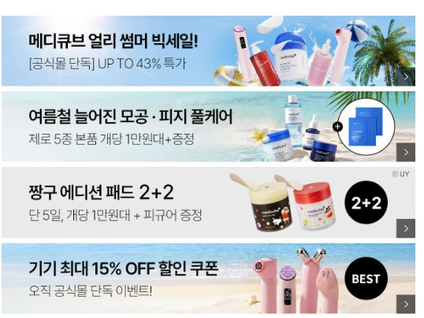
메디큐브 51,000원 쿠폰 즉시 다운 CTA를 가격 블록 안에 삽입, 결제 수단별 추가 혜택 명시
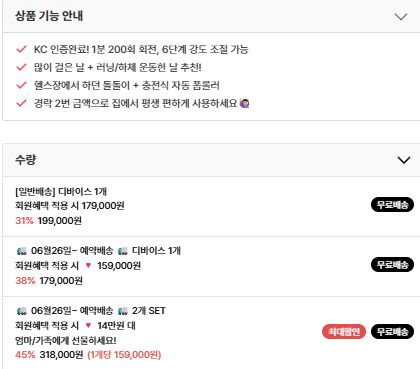
롤리 정가 → 판매가 → 쿠폰 적용가 3단계 앵커링, 회원가입 시 추가 할인 CTA를 가격 블록 안에 배치
🤖 AI 판정: 쿠폰 다운로드 버튼 또는 적립금 안내가 가격 블록 200px 이내에 배치되어 있는가?
MID 복수 혜택은 항목별 금액을 나열한 뒤 '총 N원 절약' 한 줄로 합산해 체감 할인폭을 극대화한다.
✅ 베스트 — 쿠폰 5,000원 + 사은품 60,000원 + 배송비 페이백 55,000원 = '총 120,000원 절약' 형태로 합산 라인이 CTA 직전에 노출된다.
❌ 미흡 — 혜택 항목만 나열되고 합산 금액이 없어 소비자가 직접 계산해야 한다.
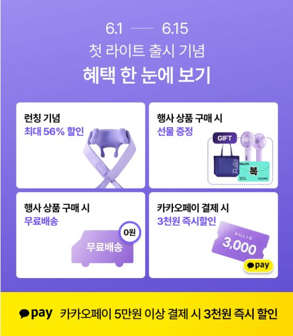
풀리오 허벅지 마사지기 혜택 총합 120,000원 수치화, 각 항목별 금액 명시 후 합산 강조
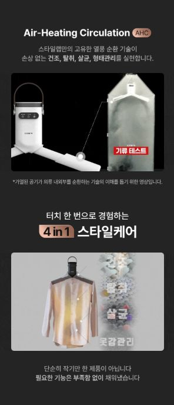
시티파이 5단계 혜택을 번호 리스트로 정리 후 '총 N원 절약' 마지막 줄 요약
🤖 AI 판정: 개별 혜택(쿠폰·사은품·무료배송 등) 금액의 합산 총액이 명시되어 있는가?
store/shipping
배송·오늘출발
배송 속도와 마감 시간을 수치로 명시하면 구매를 미루는 이유를 제거하고 즉시 결정을 유도한다.
HIGH 오늘 출발 컷오프 시간을 '오후 N시 이전 주문 시 당일 출고' 형식으로 구체적으로 명시한다.
✅ 베스트 — '오후 2시 이전 주문 시 당일 출고' 문구가 옵션 선택 위에 배치되고, 마감까지 남은 시간을 실시간 카운트다운으로 보여준다.
❌ 미흡 — '빠른 배송' '당일 출발'이라는 추상적 문구만 있고 기준 시간이 없어 구매자가 확신할 수 없다.
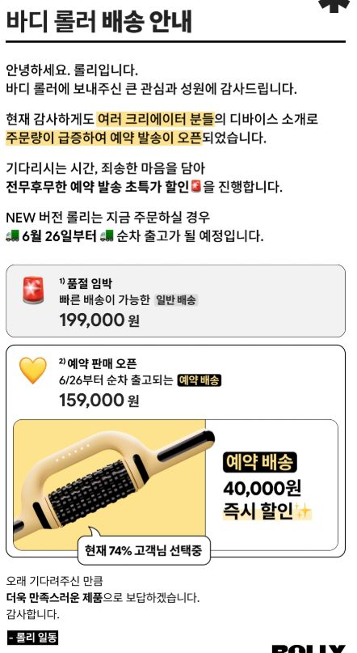
롤리 오늘 출발 마감 15:00 카운트다운 타이머를 옵션 선택 바로 위에 배치
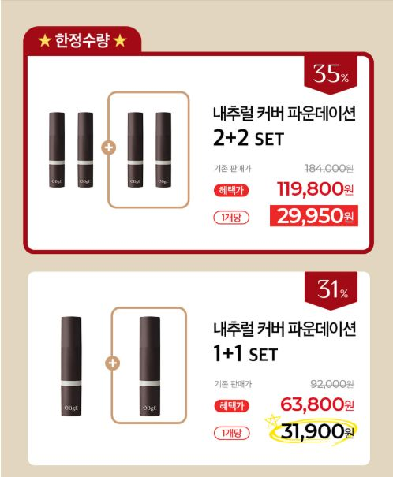
오브제 당일 오후 2시 이전 주문 시 당일 출고 구체적 기준 명시
🤖 AI 판정: 배송 출고 기준 시간(컷오프)이 옵션 선택 영역 근처에 구체적으로 표시되어 있는가?
MID 배송 신뢰를 통계 수치로 표현하고, 정책은 아코디언으로 정리해 가독성을 확보한다.
✅ 베스트 — '발송된 제품의 96%는 다음날 도착'처럼 통계 수치로 배송 신뢰를 증명하고, 배송·교환·반품·AS 조건을 아코디언 토글로 제공한다.
❌ 미흡 — '1~3일 배송'처럼 범위만 표기하거나, 정책 전문을 노출해 페이지가 길어지고 가독성이 떨어진다.
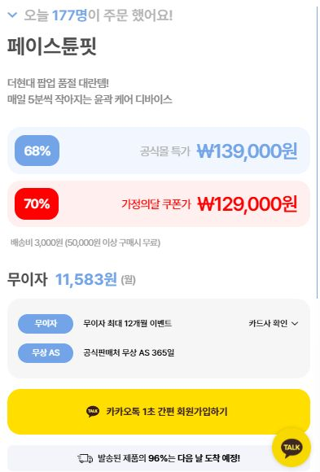
Well247 '발송된 제품의 96%는 다음날 도착' 통계 수치로 배송 신뢰 증명
풀리오 목 어깨 라이트 마사지기 배송/교환반품/쿠폰적립금/AS 아코디언 정리, AS 기간 수치를 혜택 요약 블록에 앞으로 노출
🤖 AI 판정: 배송 도착률·평균 소요일 등 실측 수치가 있거나, 배송·반품·AS 정책이 아코디언으로 정리되어 있는가?
store/review_event
리뷰 이벤트
리뷰 작성 인센티브를 상세페이지에 명시하면 누적 리뷰 수를 빠르게 늘려 신규 방문자의 구매 신뢰를 높인다.
MID 리뷰 작성 인센티브(포인트·사은품)를 리뷰 섹션 상단에 명시해 작성 참여를 유도한다.
✅ 베스트 — '포토 리뷰 작성 시 N포인트 적립' 안내가 리뷰 섹션 최상단에 배치되고, 베스트 리뷰 3개가 상세 본문 내에 직접 삽입되어 있다.
❌ 미흡 — 리뷰 이벤트 안내가 없거나 공지사항 페이지에만 있어 구매 후 놓치는 경우가 많다.
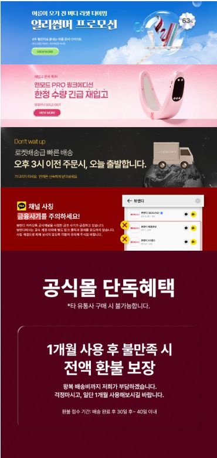
뷰앤디 '리뷰 작성 시 N포인트' 인센티브를 리뷰 섹션 상단에 표시, 리뷰 2,558개 누적 운영
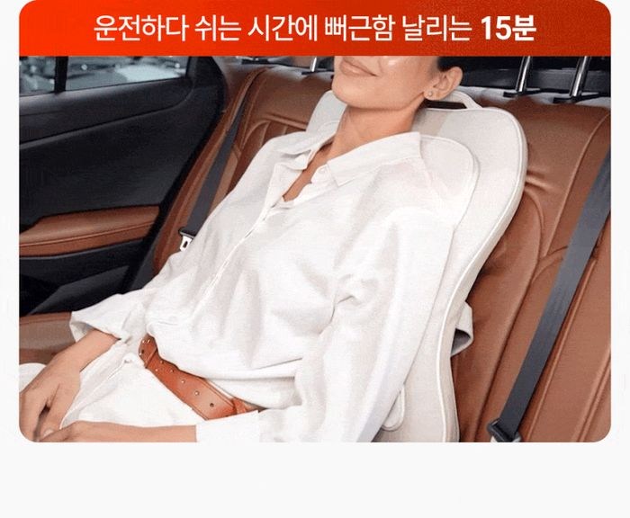
빌라르 상단 부분에 포토리뷰이벤트 명시
🤖 AI 판정: 리뷰 이벤트 내용(적립금, 포인트, 사은품 등)이 리뷰 탭 또는 상세 본문 리뷰 섹션에 눈에 띄게 노출되어 있는가?
MID 리뷰 탭에 리뷰 수를 숫자로 병기해 탭 자체가 신뢰 지표가 되도록 한다.
✅ 베스트 — 탭에 '리뷰 253개' 처럼 숫자가 병기되고, 리뷰 수가 적을 때는 베스트 리뷰 3개를 상세 본문에 직접 삽입해 스크롤 전 신뢰를 확보한다.
❌ 미흡 — 리뷰 탭에 숫자가 없어 클릭 전까지 리뷰가 얼마나 있는지 알 수 없다.
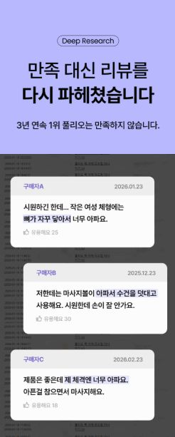
풀리오 V3 리뷰 탭에 '리뷰 253개' 숫자 병기, 탭 자체가 신뢰 지표로 작동
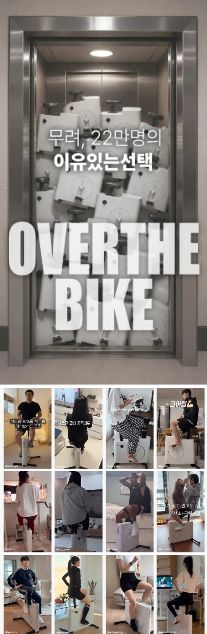
오버더바이크 리뷰 7,966개 + Q&A 13,281개 탭 숫자 직접 표시
🤖 AI 판정: 리뷰 탭 레이블에 리뷰 개수(예: '리뷰 253개')가 명시되어 있는가?
store/notice
공지사항
소비자가 자주 혼동하는 정보(유통 경로, 가격 정책, 납품 문의 등)를 상단 공지로 선제 안내하면 CS 문의를 줄이고 신뢰도를 높인다.
HIGH 구매 전 꼭 확인해야 할 핵심 고지(정품 구매처, 가격 정책, 배송 주의사항)를 상세페이지 최상단에 눈에 띄는 공지로 배치한다.
✅ 베스트 — '긴급공지 — 정품은 공식몰에서만 구매 가능합니다' 또는 납품·대량구매 문의 안내가 빨간 배경 등 시각적으로 강조된 배너로 최상단에 배치된다.
❌ 미흡 — 공지가 없거나 상세 본문 하단에 작은 글씨로만 표기되어 소비자가 지나치기 쉽다.
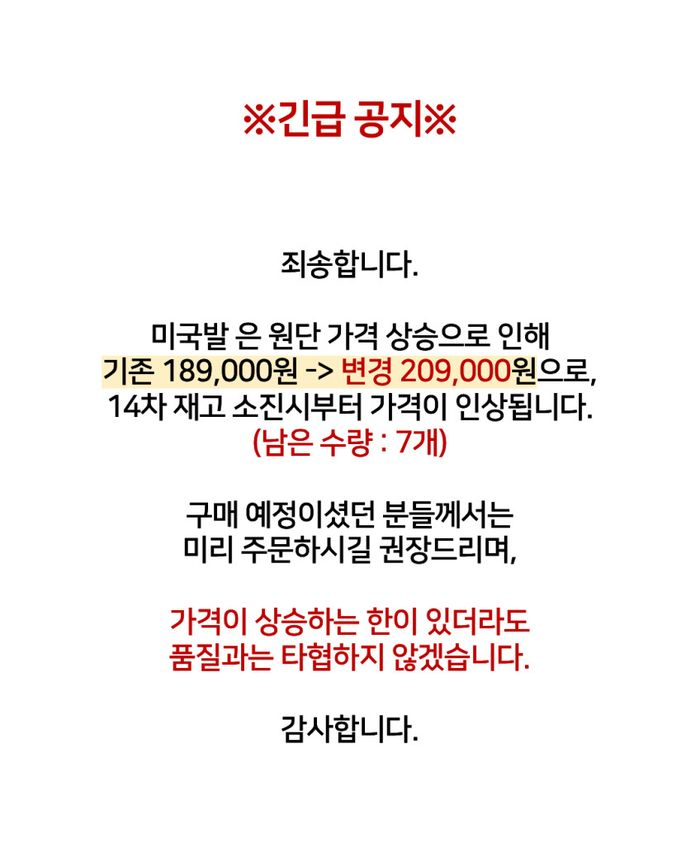
백온담 긴급공지(가격관련/납품문의) 상세페이지 최상단 배치로 구매 촉진 및 신뢰도 상승
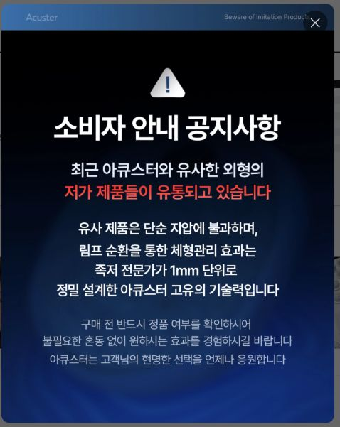
아큐스터(Archpin) 소비자 안내 공지사항 팝업으로 구매 전 핵심 정보 선제 고지
🤖 AI 판정: 가격 변동, 공식 구매처, 배송 관련 주의사항 등 핵심 공지가 상세 본문 최상단 또는 이미지 갤러리 첫 번째 컷에 노출되어 있는가?
MID 제품 사용 전 필독 사항(사용 대상 제한, 의료기기 여부, 오해 방지 문구)을 명확하게 고지한다.
✅ 베스트 — KC인증번호·제조사·'의료기기 아님' 명시를 테이블 형태로 정리하고 아코디언으로 제공해 가독성과 신뢰를 동시에 확보한다.
❌ 미흡 — 사용 금지 대상이나 의료기기 여부가 명시되지 않아 CS 민원이나 반품 사유가 된다.
메디큐브 KC인증번호·제조사·1년 무상 AS·'의료기기 아님' 명시를 테이블로 정리, 아코디언 제공
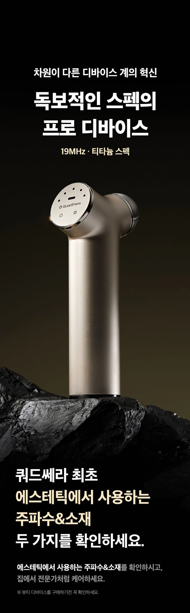
쿼드쎄라 '뷰티 디바이스를 구매하기 전 꼭 확인하세요' 필독 공지 삽입
🤖 AI 판정: '의료기기 아님', '심장질환자 사용 금지' 등 의무 고지 또는 오해 방지 문구가 상세 본문 내 명확히 표시되어 있는가?
store/crosssell
크로스셀·번들
옵션 선택 영역 바로 아래에 연관 제품이나 번들을 카드형으로 노출하면 페이지 이탈 없이 객단가를 자연스럽게 높일 수 있다.
HIGH 연관 소모품·보조 용품을 옵션 선택 영역 바로 아래 카드형으로 배치해 페이지 이동 없이 업셀을 완성한다.
✅ 베스트 — 안장커버·전용 매트·젤패드 등 2~3개 핵심 연관 상품이 옵션 선택 아래 카드형으로 노출되고, 각 카드에 가격과 '함께 구매' CTA가 포함된다.
❌ 미흡 — 연관 상품이 없거나 별도 카테고리 페이지로 이동해야만 확인할 수 있어 업셀 기회를 놓친다.
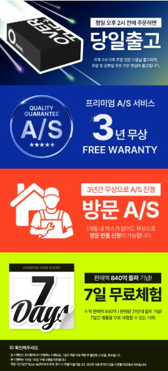
오버더바이크 안장커버·미니덤벨·부스팅슈트·프로틴 4종을 옵션 선택 아래 카드형 배치, 페이지 이동 없이 업셀 완성
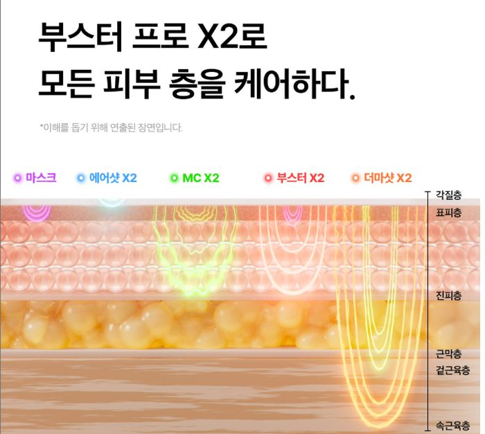
메디큐브 추가 구성 상품을 옵션 선택 영역 바로 아래 배치, 품절 아이템도 그레이 처리 노출
🤖 AI 판정: 크로스셀 상품(소모품, 보조 기구, 관련 제품)이 옵션 선택 영역 근처에 카드 또는 이미지 형태로 배치되어 있는가?
MID 번들 구성의 총 절감 금액을 수치로 명시해 세트 구매의 경제적 이유를 제공한다.
✅ 베스트 — '단품 N원 × 2개 = 세트 N원 (N% 할인, N원 절약)' 형태로 단품 대비 이득이 명확히 표시되고, 옵션 드롭다운에서 선택하면 가격이 실시간으로 반영된다.
❌ 미흡 — 세트 상품이 있으나 단품 가격과 비교 없이 단순 나열되어 혜택이 체감되지 않는다.
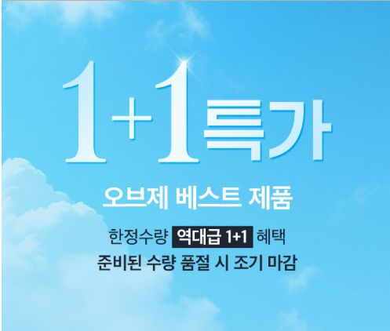
오브제 옵션 선택 단계에서 1+1 특가·한정수량 표기로 업셀링과 긴급성 동시 확보
풀리오 허벅지 마사지기 세트 구매 옵션을 드롭다운 안에 포함, 별도 페이지 이동 없이 업셀 완성
🤖 AI 판정: 번들·세트 구매 시 절감 금액 또는 할인율이 옵션 선택 단계에서 직접 표시되어 있는가?
store/official
정품·공식판매처
비정상 유통 경로로 인한 가품 피해 우려를 해소하면 구매 신뢰도가 상승하고 공식몰 직구매를 유도할 수 있다.
HIGH 비정상 유통 경로 및 모방품 주의 안내를 시각적으로 강조된 배너로 상세 본문 상단에 배치한다.
✅ 베스트 — '비정상 유통경로 판매처 피해 주의' 배너가 빨간 배경이나 경고 아이콘과 함께 상단에 노출되고, 공식몰 URL 또는 정품 확인 방법이 함께 안내된다.
❌ 미흡 — 공식 판매처 안내가 없거나 페이지 하단 작은 글씨로만 표기되어 소비자가 인식하지 못한다.
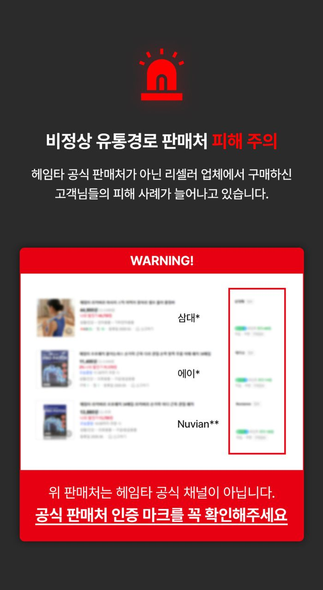
헤임타 비정상 유통경로 판매처 피해 주의 배너 상단 배치
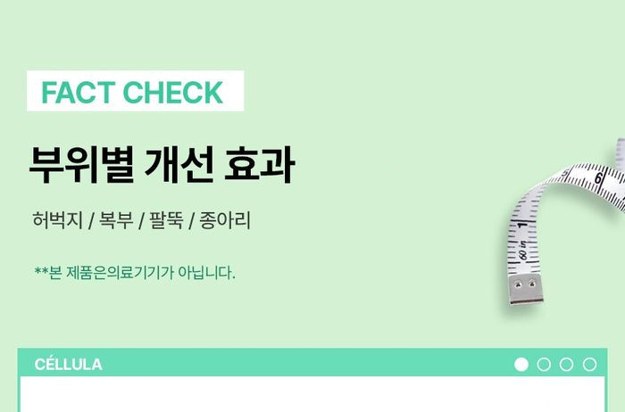
메디니 모방품과의 비교샷을 상세 본문에 삽입해 정품 차별성 명시
🤖 AI 판정: 공식 판매처 안내 또는 비정상 유통 경로 주의 문구가 상세 본문 내 배치되어 있는가?
MID 오프라인 입점 이력(약국·백화점·의원 등)을 배지 또는 이미지로 시각화해 공식성을 증명한다.
✅ 베스트 — '약국 입점' 배지 또는 '더현대 팝업 완판'과 같은 오프라인 권위 이력이 제품명 200px 이내에 배치되고, 특허·인증마크와 함께 묶어서 신뢰 3종 세트로 구성된다.
❌ 미흡 — 오프라인 입점 이력이 있음에도 텍스트만 언급하거나 상세 본문 하단에만 배치해 스크롤 전 신뢰 선점 기회를 놓친다.
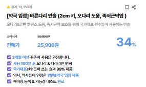
BENTIFLEXIER 약국 입점 배지를 이미지 갤러리에 삽입, 특허청 등록+병원/약국 입점+기능성 테스트 3종 세트
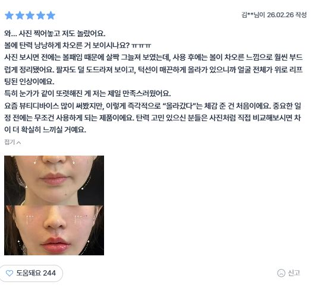
Well247 '더현대 팝업 품절 대란템' 오프라인 권위를 제품명 바로 아래 첫 줄 배치
🤖 AI 판정: 오프라인 판매 이력(약국 입점, 백화점 입점, 홈쇼핑 방영 등) 또는 공인 기관 인증이 이미지 갤러리 또는 상세 본문 내에 시각적으로 표시되어 있는가?
store/fomo
긴급성(타이머·한정수량)
타이머와 한정수량을 CTA 바로 위에 동시 노출하면 구매를 미루려는 심리를 차단해 즉시 전환율을 높인다.
HIGH 카운트다운 타이머와 남은 재고 수량을 CTA 버튼 바로 위에 한 블록으로 동시 배치한다.
✅ 베스트 — '한정수량 특가 마감까지 D-00:00:00' 타이머 + '남은 재고 12개' 수량을 한 배너에 묶어 CTA 바로 위에 배치한다. 스크롤 50% 지점에 재고 바가 한 번 더 노출된다.
❌ 미흡 — 타이머만 있거나 수량만 있어 긴급성이 절반으로 줄어들고, CTA와 떨어진 위치에 배치되어 심리적 연결이 약하다.
Well247 페이스튠핏 '한정수량 특가 마감까지' + 남은 수량 355개 + 카운트다운 타이머를 한 블록에 동시 노출
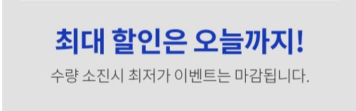
BENTIFLEXIER '한정수량 특가 마감까지' 타이머 + 남은 재고 12개 헤더 최상단 배치, FOMO 극대화
🤖 AI 판정: 타이머(시간 긴급성)와 한정 수량(희소성) 두 가지 FOMO 장치가 CTA 버튼과 200px 이내 동일 화면에 함께 노출되어 있는가?
MID 재고가 없어도 배송 마감 컷오프 타이머로 상시 운영 가능한 긴급성 장치를 유지한다.
✅ 베스트 — '오늘 출발 마감 15:00' 형태의 배송 컷오프 타이머를 옵션 선택 위에 배치하고, '지금 주문하면 N일(N요일) 도착' 문구로 수령일 예측 가능성을 제공한다.
❌ 미흡 — 항상 '오늘 출발'만 표기하고 마감 시간이 없어 긴급성이 없으며, 재고가 충분한 상시 판매 제품에 타이머가 없다.
롤리 '오늘 출발 마감 15:00' 카운트다운 타이머 옵션 선택 바로 위 배치, 재고 없어도 상시 운영 가능한 FOMO 장치
시티파이 카운트다운 타이머를 '앵콜 이벤트' 프레임으로 포장, 상시 운영 긴급성 연출
🤖 AI 판정: '오늘 오후 N시 이전 주문 시 오늘 출발' 등 배송 마감 기반 긴급성 문구가 있는가?
LOW 품절된 옵션을 삭제하지 않고 'SOLD OUT' 그레이 처리로 노출해 인기와 희소성을 역설적으로 증명한다.
✅ 베스트 — 품절 색상·사이즈가 그레이 처리된 채 노출되어 '인기 있어서 소진' 메시지를 간접 전달하고, 재고 있는 옵션을 더 매력적으로 보이게 만든다.
❌ 미흡 — 품절 옵션이 드롭다운에서 완전히 제거되어 인기 증명 효과를 놓친다.
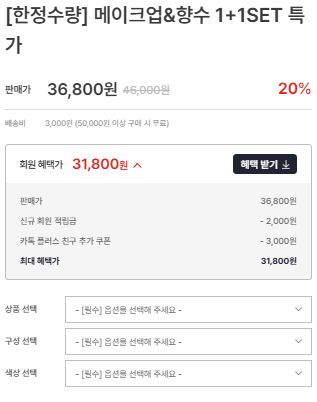
뷰앤디 'SOLD OUT' 옵션 노출, 다른 옵션의 재고 있음을 역설적으로 강조
메디큐브 품절 상태도 숨기지 않고 표시, 역설적으로 인기 증명
🤖 AI 판정: 품절 옵션이 'SOLD OUT' 등 비활성 표시로 노출되어 있는가?
store/realtime
실시간 구매알림
'오늘 N명이 구매했어요' 같은 실시간 수치는 사회적 증거를 즉시 작동시켜 '나만 안 사고 있다'는 심리를 자극한다.
HIGH '오늘 N명 구매' 또는 '지금 N명이 보고 있어요' 실시간 수치를 제품명 바로 위 또는 CTA 버튼 위에 배치한다.
✅ 베스트 — '오늘 150명이 주문했어요' 수치가 제품명 바로 위에 배치되거나, '지금 94명이 보고 있어요' + 한정수량 진행률 바가 스크롤 중 팝업으로 등장한다.
❌ 미흡 — 실시간 수치가 없거나 하단 리뷰 섹션 근처에만 배치되어 구매 결정 시점에 노출되지 않는다.
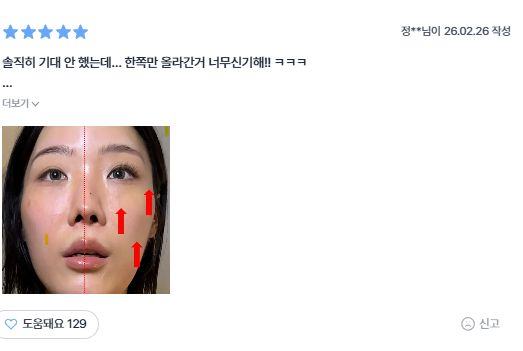
Well247 페이스튠핏 '오늘 150명이 주문했어요' 제품명 바로 위 배치, 실시간 구매 활발함 증명
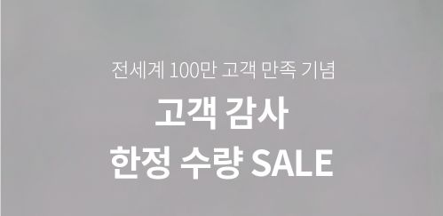
BENTIFLEXIER '오늘 구매수 13,279명' + '함께 보는 사람 80,124명' 수치를 옵션 선택 영역 바로 위 배치
🤖 AI 판정: 실시간 또는 당일 구매자 수, 동시 열람자 수 등의 사회적 증거 수치가 가격 블록 또는 CTA 200px 이내에 노출되어 있는가?
MID 실시간 수치가 없을 경우 누적 판매량을 대체 지표로 활용하되 구체적인 숫자로 표현한다.
✅ 베스트 — '누적 50,000대 판매' 수치가 상세 본문 첫 챕터에 배치되거나, '이번 달 N개 판매'처럼 기간 단위 수치로 실시간 수치를 대체한다.
❌ 미흡 — 구체적 수치 없이 '베스트셀러', '인기 제품'처럼 추상적 표현만 사용한다.
뷰앤디 누적 판매 50,000대 수치화를 상세 본문 첫 챕터에 배치, 대중 검증 선언
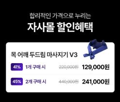
풀리오 V3 '이번 달 N개 판매' 누적 판매량으로 실시간 수치 대체 가능 아이디어 제시
🤖 AI 판정: 'N만 개 판매' 또는 '이번 주 N개 판매' 등 누적·기간 단위 판매 수치가 제품명 또는 가격 블록 근처에 노출되어 있는가?
눈길 끌기 & 공감
● 후킹/인트로
hook/slogan
메인 슬로건
첫 화면에서 3초 안에 고객의 페인포인트를 건드리는 슬로건이 없으면 이후 어떤 콘텐츠도 읽히지 않는다.
HIGH 슬로건은 제품 기능이 아닌 고객의 신체적 불편이나 욕구를 직접 언급한다.
✅ 베스트 — '하루 종일 뭉친 어깨, 집에서 5분으로 푼다'처럼 타겟 상황→해결 순서로 구성된 1문장 카피
❌ 미흡 — '최고의 마사지기'처럼 제품 우월성만 주장하거나, '고급스러운 힐링'처럼 추상적 감성만 있는 슬로건
오버더바이크 '하루 10분, 전신 근력+유산소+코어운동을 한번에' — 사용 시간+효과를 한 줄에 압축한 슬로건 구조
🤖 AI 판정: 슬로건에 '나(고객)의 상태·상황'을 지칭하는 단어(예: 뭉친, 쌓인, 힘든, 매일 등)가 포함되어 있는가?
HIGH 슬로건은 스크롤 없이 보이는 첫 화면 최상단에 단독 배치하여 시선을 즉시 집중시킨다.
✅ 베스트 — 히어로 이미지 위에 오버레이 텍스트로 삽입되거나, 제품명 바로 아래 첫 번째 서브헤딩으로 가장 큰 폰트 사용
❌ 미흡 — 슬로건이 상세 본문 중간쯤에 묻혀 있거나, 다른 배너·공지와 같은 크기로 경쟁하여 시선을 빼앗기는 경우
뷰앤디 히어로 이미지에 타이머 오버레이 + 연예인 추천 첫 문장으로 첫 화면 신뢰·긴급성 동시 선점
🤖 AI 판정: 슬로건이 히어로 이미지 또는 첫 텍스트 블록의 가장 큰 폰트로 화면 상단 200px 이내에 위치하는가?
MID 슬로건에 사용 시간·빈도·부위 등 구체적 수치나 행동 동사를 포함하여 체감 실효성을 전달한다.
✅ 베스트 — '하루 5분, 목·어깨 뭉침을 집에서 직접 두드려 푼다'처럼 시간+신체부위+동작이 결합된 카피
❌ 미흡 — 막연한 '힐링', '프리미엄', '편안함' 키워드만 나열하여 체감 효과가 전혀 없는 슬로건
🤖 AI 판정: 슬로건에 숫자(분, 회, cm, %) 또는 구체적 행동 동사(두드린다, 풀린다, 관리한다 등)가 한 개 이상 있는가?
hook/keyvisual
키비주얼
마사지기는 '어떻게 쓰는지'와 '어떤 느낌인지'가 구매 결정에 결정적이므로, 키비주얼이 제품의 기능과 사용 장면을 동시에 전달하지 못하면 전환율이 급락한다.
HIGH 키비주얼은 제품 단독컷이 아닌 신체 부위에 실제 사용하는 착용·접촉 장면을 보여준다.
✅ 베스트 — 목·어깨에 마사지기를 착용한 실제 사용 장면 + 표정이 보이는 상반신 컷으로, 사용 부위와 착용 방법을 직관적으로 전달
❌ 미흡 — 흰 배경에 제품만 있는 스튜디오컷을 키비주얼로 사용하거나, 사용 부위를 알 수 없는 소품 배치 구도
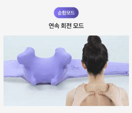
풀리오 마사지 하는 장면을 손으로 마사지 하는 장면으로 치환해 효과·사용법을 직관적으로 표현
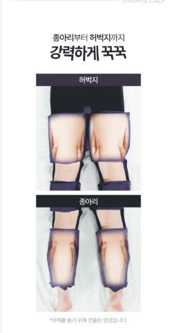
풀리오 허벅지 마사지기 — 신체 착용 시나리오 이미지로 사용 장면 전달
🤖 AI 판정: 첫 번째 또는 두 번째 이미지에 제품이 실제 신체(목, 어깨, 허리 등)에 밀착된 사용 장면이 포함되어 있는가?
HIGH 키비주얼에 GIF 또는 영상을 활용하여 마사지 동작·진동·압박 효과를 동적으로 시각화한다.
✅ 베스트 — 마사지기 헤드가 실제로 움직이거나 진동하는 GIF를 히어로 바로 아래 배치하여 사용감을 간접 체험시킴
❌ 미흡 — 정지 이미지만 나열하여 '진동', '두드림', '압박' 등의 기능이 텍스트 설명 없이는 전혀 체감되지 않는 구성
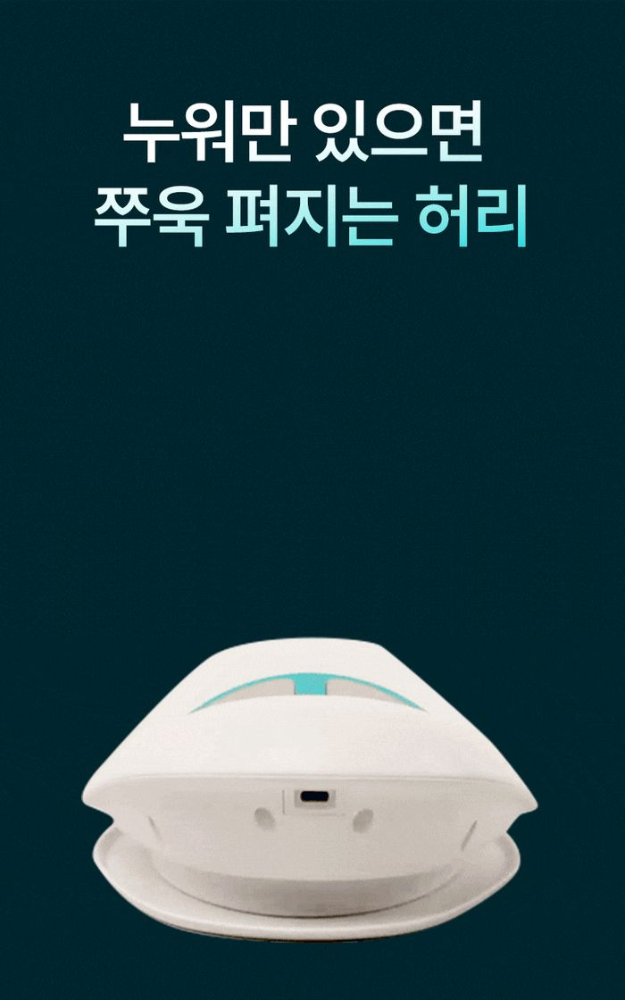
휴플러스 사용법+효과를 한눈에 알 수 있는 GIF로 체크포인트를 제품 실사로 표현
메디큐브 디바이스 작동 원리·진동·흡수 과정을 직관적으로 시각화
🤖 AI 판정: 키비주얼 영역(히어로 또는 첫 3번째 이미지 이내)에 제품 작동 장면을 담은 GIF나 자동재생 영상이 포함되어 있는가?
MID 키비주얼은 타겟 고객(연령·성별·라이프스타일)이 자신의 모습으로 동일시할 수 있는 모델과 배경을 사용한다.
✅ 베스트 — 30~40대 직장인이 타겟이면 사무복이나 캐주얼 차림으로 소파나 의자에서 사용하는 장면, 운동 후 타겟이면 운동복 착용 장면
❌ 미흡 — 과도하게 보정된 모델이나 타겟층과 동떨어진 배경(예: 운동선수 전용 제품처럼 보이는 스포츠 컷을 일반인 케어 제품에 사용)
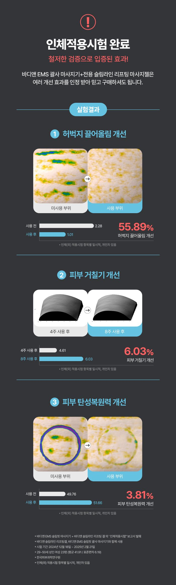
바디앤 연예인 사용 GIF로 제품 인지 + 체험단 B&A로 타겟 공감 연결
🤖 AI 판정: 키비주얼의 모델 연령대·성별·배경(집, 사무실, 운동 후 등)이 주요 구매 타겟층과 일치하는가?
hook/model_celeb
모델·셀럽컷
마사지기·헬스케어 제품은 효과가 눈에 보이지 않아 신뢰 장벽이 높기 때문에, 셀럽·전문가 모델 컷이 권위 이식과 사회적 증거를 동시에 제공하는 가장 빠른 신뢰 획득 수단이다.
HIGH 셀럽·모델 컷은 단순 광고 포즈가 아닌 실제 제품을 신체에 사용하는 장면으로 구성한다.
✅ 베스트 — 연예인이 집에서 편한 복장으로 마사지기를 목·어깨에 착용한 사진 + '내돈내산' 또는 인스타 캡처 형태로 자연스러운 신뢰 이식
❌ 미흡 — 제품을 들고 서 있는 포즈컷만 있거나, 셀럽 이름만 텍스트로 언급하고 실제 사용 장면이 없는 구성
롤리 '노홍철 마사지기' 연계 카피를 상세 본문에 삽입, 연예인 언급을 브랜드명처럼 활용
오버더바이크 '전현무 내돈내산' 문구를 누적 판매 수치와 함께 가격 블록 위에 한 줄로 배치
🤖 AI 판정: 셀럽·모델이 제품을 실제로 착용하거나 사용 중인 동작 이미지(또는 영상 캡처)가 한 장 이상 있는가?
HIGH 셀럽·모델 컷은 상세 본문 3번째 섹션 이내(스크롤 초반)에 배치하여 신뢰를 기능 설명보다 먼저 확보한다.
✅ 베스트 — 히어로 바로 아래 첫 번째 또는 두 번째 섹션에 연예인·전문가 사용 인증 배치 → 이후 기능·스펙 설명 순서
❌ 미흡 — 셀럽 컷이 기능 설명 뒤쪽에 묻혀 있거나, 페이지 최하단 리뷰 섹션 근처에 위치하여 대부분의 방문자에게 노출되지 않는 경우
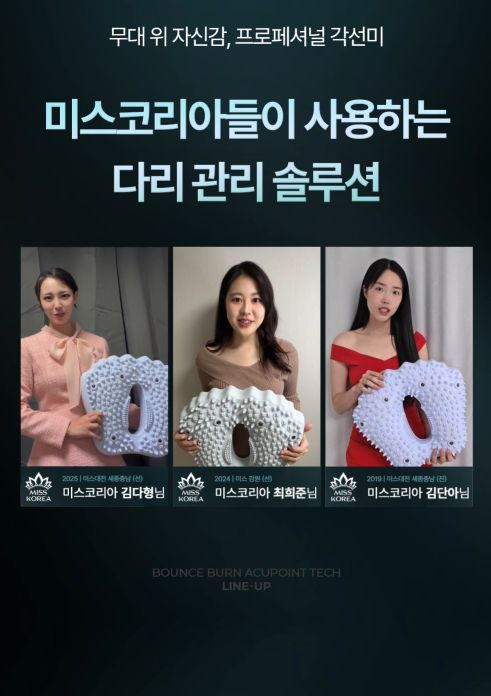
더스크랙 미스코리아 공식 다리 관리 루틴 권위를 상세 본문 첫 챕터에 배치 → 신뢰→기술→구매 순서
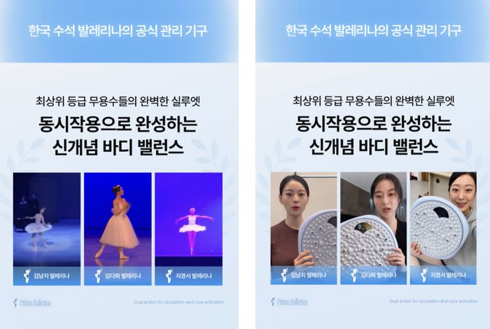
Archpin 연예인 컷을 상세페이지 배열 최상단(첫 번째 섹션)에 배치
🤖 AI 판정: 셀럽·전문가 모델 컷이 제품 기능 설명 섹션보다 앞에 위치하는가?
MID 전문가(의사·물리치료사·선수) 모델 사용 시 소속·자격을 명기하여 권위를 구체화한다.
✅ 베스트 — '15년차 산부인과 전문의 OOO 원장 자문', '국가대표 축구선수 사용' 등 구체적 직함과 이름 병기로 권위를 수치화
❌ 미흡 — '전문가 추천', '의사가 인정한' 같은 모호한 표현만 있고 누구인지 알 수 없는 경우
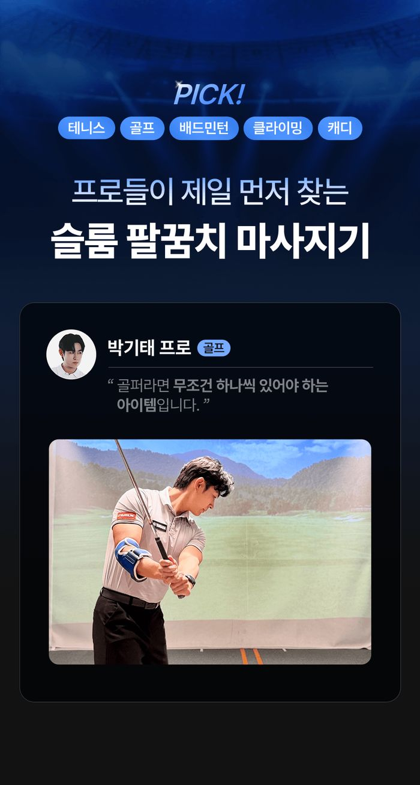
SLOOM 정형외과 전문의 자문·산부인과 전문의 자문을 섹션에 명기
BENTIFLEXIER 약국 입점·의사·약사 인정·국가대표 선수 사용·특허청 등록을 상품 제목과 썸네일에 직접 삽입
🤖 AI 판정: 전문가 모델이 등장하는 경우 직함·소속(예: '정형외과 전문의', '국가대표 선수')이 이미지 또는 캡션에 명시되어 있는가?
hook/buzz
화제성·내돈내산
마사지기 구매자는 '진짜 효과가 있나'를 의심하기 때문에 광고가 아닌 실사용자의 자발적 구매·후기 증거를 상단에 노출해야 신뢰 장벽을 빠르게 허문다.
HIGH 블로그·SNS 내돈내산 후기 캡처를 상세 본문 3번째 섹션 이내에 직접 삽입한다.
✅ 베스트 — 네이버 블로그 또는 인스타그램 게시물 캡처 3~5장을 '이미 산 사람들의 이야기' 프레임으로 묶어 기능 설명 전 배치
❌ 미흡 — 후기 이미지가 없고 별점·텍스트 리뷰만 상세 본문 하단 리뷰 탭에만 있어 대부분의 방문자가 보지 못하는 경우
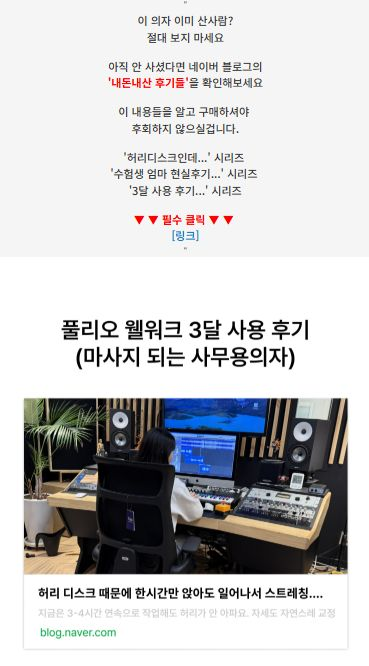
풀리오(웰워크) '이미 산 사람 절대 보지 마세요' 역설적 카피로 후킹 후 네이버 블로그 실사용 후기 3장 삽입
풀리오(목 어깨 라이트) 블로그 후기 스크린샷을 상세 본문 초반에 직접 삽입해 신뢰 선행 후 기능 설명
🤖 AI 판정: 실제 블로그 또는 SNS 후기 스크린샷이 기능 설명 섹션보다 앞(본문 상단 1/3 이내)에 배치되어 있는가?
HIGH 화제성 수치(누적 판매량·방송 소개·완판 이력)를 가격 블록 200px 이내에 배치하여 대중 검증을 선언한다.
✅ 베스트 — '22만명이 선택한', '더현대 팝업 품절 대란템', '홈쇼핑 N회 방영 완판' 등 외부 검증 이력을 제품명 바로 아래 첫 줄에 배치
❌ 미흡 — 화제성 수치가 없거나, 있더라도 상세 본문 하단 브랜드 소개 섹션에 묻혀 구매 결정 직전에 노출되지 않는 경우
오버더바이크 '판매량 1위, 22만명이 선택한 원조 #한뼘바이크' + '전현무 내돈내산' 가격 블록 위 한 줄 배치
Well247 '더현대 팝업 품절 대란템!' 오프라인 검증 권위를 제품명 바로 아래 첫 줄에 배치
🤖 AI 판정: 누적 판매량, 방송 소개, 팝업 완판 등 화제성 근거 수치가 가격 블록 바로 위 또는 아래 한 줄로 노출되는가?
MID 내돈내산 후기는 타겟 유형별(직장인/운동 후/주부 등)로 분류하여 구매자가 자신의 상황을 즉시 찾도록 구성한다.
✅ 베스트 — '장시간 앉아있는 직장인 후기', '운동 후 회복에 쓰는 후기', '수험생 자녀를 위한 부모 후기' 등 타겟별 분류로 공감 강화
❌ 미흡 — 날짜 순 또는 별점 순으로만 나열되어 자신과 비슷한 상황의 후기를 찾기 어렵게 된 경우
풀리오(웰워크) 허리디스크·수험생 엄마·3달 사용 후기 등 타겟별로 UGC를 분류해 공감 극대화
🤖 AI 판정: 후기 섹션이 사용자 유형 또는 사용 상황별로 분류 태그나 소제목이 붙어 있는가?
hook/brand_mood
브랜드 무드
헬스케어 마사지기는 가격대가 높아 신뢰와 품질 인식이 결정적인데, 브랜드 무드(색상·타이포·톤앤매너)가 일관되지 않으면 '싸 보임' 인식으로 가격 저항이 커진다.
HIGH 브랜드 주색상·서체·여백을 상세페이지 전체에서 일관되게 유지하여 프리미엄 품질 인식을 만든다.
✅ 베스트 — 어두운 배경+골드 또는 화이트+네이비 등 브랜드 시그니처 컬러 조합을 히어로부터 마지막 섹션까지 일관 적용, 충분한 여백으로 고급감 유지
❌ 미흡 — 섹션마다 배경색이 달라지고 강조 색상이 3가지 이상 혼용되거나, 각기 다른 서체가 뒤섞여 통일성이 없는 경우
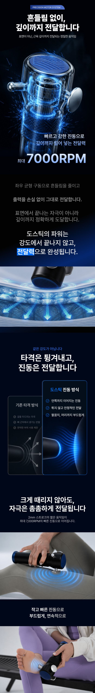
스포첵(도스틱) 어두운 배경 + 3D 이미지 조합으로 강력하고 일관된 프리미엄 무드 연출
🤖 AI 판정: 상세페이지 전체에서 주색상 2가지 이내, 서체 2종 이내로 통일되어 있으며 불필요한 색상·서체 혼용이 없는가?
HIGH 브랜드 무드는 주요 구매 타겟의 라이프스타일(예: 전문적·클리닉, 캐주얼·홈케어, 스포츠·퍼포먼스)에 맞게 설정하고 첫 화면에서 즉시 인식되도록 한다.
✅ 베스트 — 홈케어 타겟: 따뜻한 조명·편안한 인테리어 배경으로 생활 밀착 무드. 스포츠 퍼포먼스 타겟: 다크톤·근육 클로즈업으로 고강도 회복 무드. 클리닉 타겟: 화이트·깔끔한 레이아웃으로 의료기기 신뢰 무드
❌ 미흡 — 타겟 무드가 불명확하여 클리닉 이미지와 캐주얼 이모지가 한 페이지에 혼재하거나, 고가 제품인데 저가 플리마켓 느낌의 폰트·배경색을 사용하는 경우
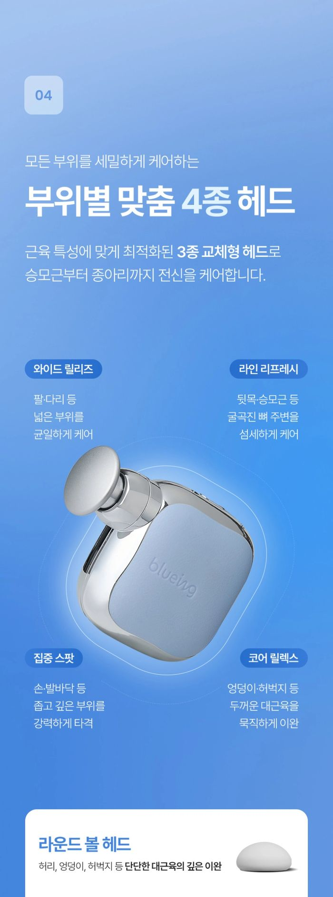
블루잉 컬러를 잘 사용한 젊은 타겟의 상세페이지로 브랜드 무드를 명확히 설정한 사례 (단, 기술력 강조는 상대적으로 부족)
🤖 AI 판정: 히어로 이미지와 첫 슬로건의 톤앤매너가 타겟 고객층의 라이프스타일을 명확히 반영하는가?
MID 브랜드 성과·수상·인증 배지는 히어로 200px 이내에 시각적으로 노출하여 무드와 신뢰를 동시에 확보한다.
✅ 베스트 — '누적 5만 대 판매', 'KC인증', '네이버 1위' 등 브랜드 신뢰 배지를 히어로 이미지 하단 혹은 제품명 옆에 아이콘+텍스트 형태로 배치
❌ 미흡 — 브랜드 성과를 상세 본문 중간 '브랜드 소개' 섹션에만 배치하여 스크롤을 내리지 않으면 인식할 수 없는 경우
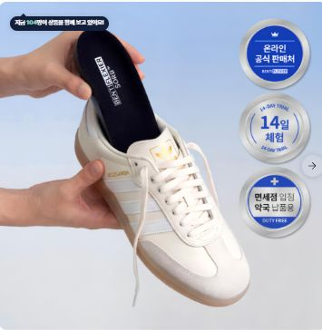
BENTIFLEXIER 약국 입점·특허청 등록·기능성 테스트 완료 3종 세트를 이미지 갤러리 배지로 삽입
시티파이 '네이버쇼핑 의류관리기 통합랭킹 1위' 배지를 SALE·BEST·HOT 배지와 함께 가격 블록 상단 배치
🤖 AI 판정: 브랜드 누적 판매 실적, 수상 이력, 인증 배지 중 하나 이상이 히어로 영역 또는 제품명 200px 이내에 배치되어 있는가?
● 문제제기/타겟
problem/pain
불편상황 나열
구매자가 자신의 상황을 상세페이지에서 발견하는 순간 스크롤을 멈추고 제품을 자신의 해결책으로 인식하기 때문이다.
HIGH 구체적인 신체 부위·상황을 3개 이상 이미지나 카피로 나열한다.
✅ 베스트 — 빌라르처럼 '오래 앉아있을 때', '무거운 물건 들 때', '운동 후' 등 사용 시점별 불편 상황을 이미지 컷마다 자막으로 노출하여 독자가 자신의 케이스를 즉시 인식한다.
❌ 미흡 — '허리가 아프신 분께 추천' 한 줄로 끝내거나, 불편 상황 없이 바로 제품 기능 설명으로 진입하는 구성.
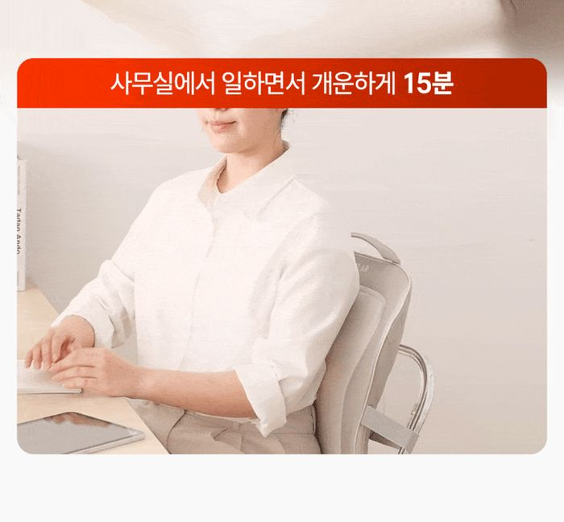
빌라르 상단 부분에 언제 사용하면 좋은지 상황별로 명시한 이미지 컷
빌라르 사용 상황 추가 컷
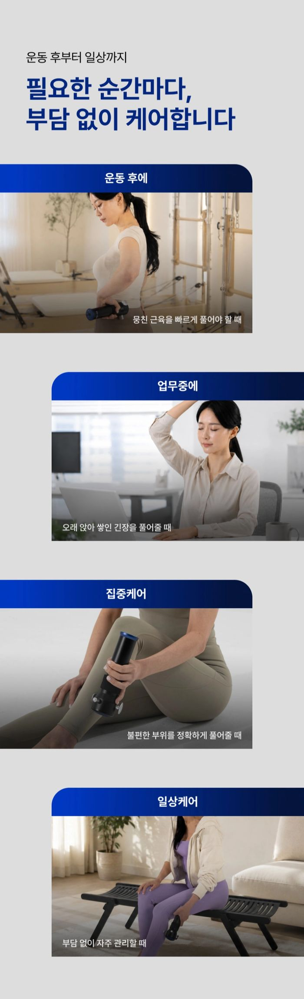
스포첵/도스틱 필요한 순간 섹션으로 상황별 페인포인트 시각화
🤖 AI 판정: 통증 부위나 불편 상황이 텍스트 또는 이미지로 3개 이상 명시되어 있는가?
MID 불편 상황 카피는 의문형이 아닌 공감형 선언문으로 작성하여 독자가 '맞아, 나 얘기다'를 느끼게 한다.
✅ 베스트 — 롤리처럼 '많이 걸은 날', '러닝/하체 운동한 날' 등 사용 타이밍을 직접 언급하여 특정 상황의 독자가 자신을 발견한다.
❌ 미흡 — '피로 해소에 도움이 됩니다' 같은 추상적·범용 문구로 누구에게도 강하게 꽂히지 않는 표현.
롤리(ROLLY) 타겟 상황 직접 언급 카피: 많이 걸은 날, 러닝/하체 운동한 날
🤖 AI 판정: '~하신 분', '~할 때 불편하신 분' 등 타겟 독자가 즉각 자신을 대입할 수 있는 공감형 문구가 포함되어 있는가?
problem/checklist
이런 분께 체크
구매 의향자가 '이게 나한테 맞는 제품인가'를 스스로 확인하도록 유도하면 구매 결정을 대신 내려주는 효과가 있기 때문이다.
HIGH 추천 대상을 체크리스트 또는 아이콘 목록 형식으로 4개 이상 시각화한다.
✅ 베스트 — 헤임타·SLOOM·벨롭처럼 '이럴 때 추천드려요' 섹션을 아이콘+텍스트 조합으로 4~6개 나열하고, 독자가 자신의 상황을 한 눈에 체크할 수 있게 구성한다.
❌ 미흡 — '허리, 어깨, 목 통증이 있는 분'처럼 산문 형태로 뭉쳐 쓰거나, 추천 대상 섹션 자체가 없어 독자가 적합성을 스스로 판단해야 하는 구성.
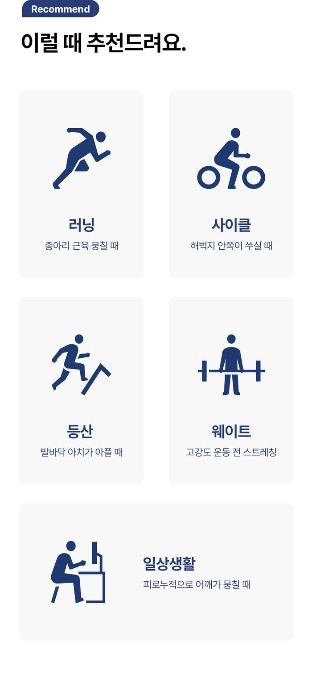
헤임타 이럴때 추천드려요 섹션
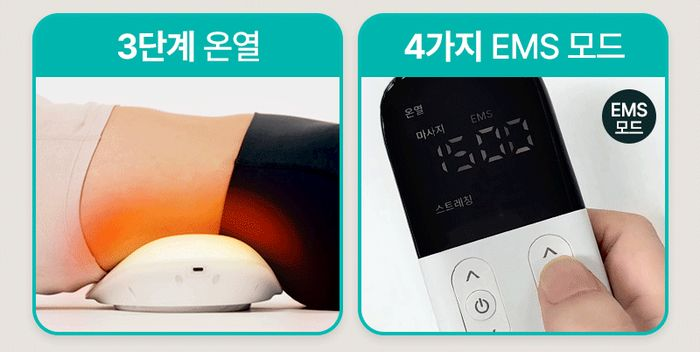
휴플러스/백플로 이런분께 추천 체크포인트 섹션
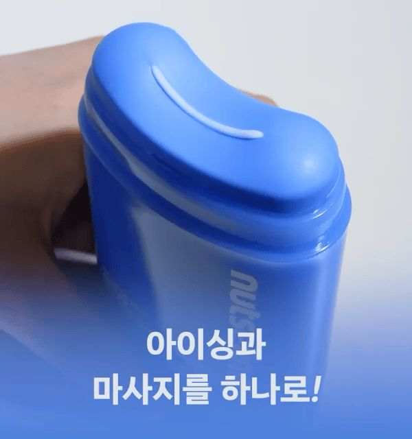
넛세 소구포인트를 Check point 형식으로 표현
🤖 AI 판정: '이런 분께 추천' 섹션이 체크리스트·아이콘·번호 목록 등 시각적 리스트 형태로 존재하는가?
MID 추천 대상 항목은 직업·생활습관·운동 종목 등 구체적인 라이프스타일 키워드를 포함한다.
✅ 베스트 — SLOOM 엘보케어처럼 '골프선수, 테니스선수, 배드민턴선수' 등 종목별로 구분하거나, BENTIFLEXIER처럼 '사용 시점·구매 이유·활용 방식'으로 4항목 구조화하여 공감+전환율을 동시에 높인다.
❌ 미흡 — '허리 통증이 있으신 분', '어깨가 뭉치신 분'처럼 증상 위주만 나열하고 라이프스타일 맥락이 없어 차별성이 없는 구성.
SLOOM/엘보케어 다양한 종목 선수별 사용 소구
BENTIFLEXIER 리뷰 기반 사용자 유형·구매 이유·활용 방식·사용 시점 4항목 구조화
🤖 AI 판정: 단순 증상 나열을 넘어 직업, 운동 습관, 생활 패턴 등 라이프스타일 맥락이 1개 이상 포함되어 있는가?
problem/alt_limit
기존 대안의 한계
마사지샵·파스·타사 제품 등 기존 해결책의 한계를 명시하면 제품의 포지셔닝이 명확해지고 '왜 이 제품이어야 하는가'에 대한 답을 소비자에게 먼저 제공할 수 있기 때문이다.
HIGH 마사지샵, 파스, 타사 기기 등 기존 대안과 비용·효과·편의성을 직접 비교하는 섹션을 둔다.
✅ 베스트 — 롤리처럼 '경락 2번 금액으로 집에서 평생 편하게'라는 비용 비교 카피를 삽입하거나, SLOOM 골반케어처럼 '비용 비교' 섹션을 별도로 두어 마사지샵 N회 vs 제품 1개 구도로 가격 정당화를 완성한다.
❌ 미흡 — 기존 대안 언급 없이 '효과가 좋습니다'만 반복하거나, '하루 N원으로 매일 마사지' 식의 환산 없이 정가만 노출하는 구성.
롤리(ROLLY) 경락 2번 금액으로 집에서 평생 — 서비스 비용 직접 비교 카피
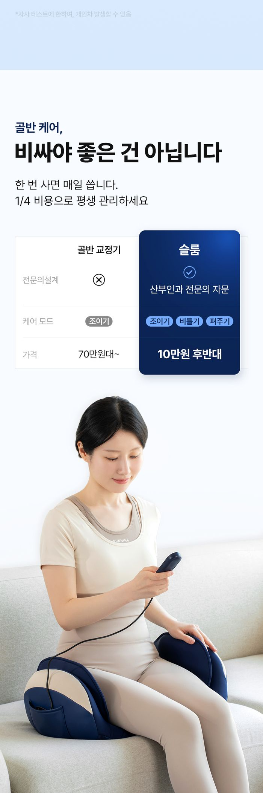
SLOOM/골반케어 가격 비교 섹션으로 마사지샵 비용 대비 제품 가치 정당화
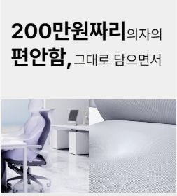
풀리오/웰워크 200만원짜리 의자와 동급이지만 더 저렴하다는 가치 정당화
🤖 AI 판정: 기존 대안(마사지샵 비용, 타 제품 방식 등)과의 비교 내용이 상세페이지에 포함되어 있는가?
MID 기존 대안의 한계를 감성적 공감 문구가 아닌 구체적인 수치나 상황으로 표현한다.
✅ 베스트 — 스포첵/도스틱처럼 마사지건과 직접 비교 섹션을 두고 기능·크기·사용 상황별 우위를 명시하거나, 더스크랙처럼 '108.2% 열감 증가' 등 소수점 수치로 기존 방식과의 차이를 정량화한다.
❌ 미흡 — '기존 제품과 다릅니다', '더 효과적입니다'처럼 추상적 우위 선언만 있고 구체적 근거가 없는 구성.
스포첵/도스틱 마사지건과 비교 섹션 — 기능·사용상황별 직접 비교
🤖 AI 판정: 기존 대안의 단점이 '비싸다', '불편하다' 수준이 아닌 구체적 수치나 상황 묘사로 제시되어 있는가?
problem/persona
타겟 페르소나
상세페이지가 모든 사람이 아닌 '특정 한 사람'에게 말을 거는 것처럼 느껴질 때 구매 전환율이 높아지기 때문이다.
HIGH 상세페이지 히어로 또는 초반 3섹션 이내에 핵심 타겟 페르소나를 이미지나 카피로 명시한다.
✅ 베스트 — 아큐스터처럼 '발레리나 무용수 아이템'이라는 구체적 페르소나를 히어로 인근에 배치하거나, SLOOM처럼 특정 스포츠 선수 이미지를 초반에 삽입하여 타겟이 '이건 나를 위한 제품'이라고 즉시 인식하게 한다.
❌ 미흡 — 40대 남성부터 20대 여성까지 모든 타겟을 나열하거나, 초반 섹션은 할인 정보만 있고 타겟 페르소나 이미지·카피가 중반 이후에야 등장하는 구성.
Archpin/아큐스터 발레리나 무용수 아이템 — 구체적 페르소나 소구
SLOOM/엘보케어 다양한 종목 골프선수 사용 소구로 타겟 명확화
더스크랙 미스코리아 공식 루틴 — 권위 기반 타겟 공감 연결
🤖 AI 판정: 스크롤 초반(3번째 섹션 이내)에 핵심 타겟이 누구인지 이미지 또는 카피로 드러나는가?
MID 타겟 페르소나는 성별·연령이 아닌 생활 시나리오(운동 후, 장시간 착석, 육아 중 등)로 정의하여 공감도를 높인다.
✅ 베스트 — 풀리오 웰워크처럼 '허리디스크 환자 / 수험생 엄마 / 3달 사용자' 등 실제 사용 맥락으로 타겟을 분류하고, 각 타겟별 후기를 연결하여 독자가 자신과 가장 비슷한 케이스를 찾는 경험을 제공한다.
❌ 미흡 — 타겟을 '20~50대 남녀 직장인'처럼 넓게 잡아 특정 독자에게 강하게 어필하지 못하는 구성.
풀리오/웰워크 블로그 UGC에서 허리디스크/수험생 엄마/3달 사용 등 타겟별 후기 분류
BENTIFLEXIER 사용자 유형 4항목 구조화로 타겟 공감 극대화
🤖 AI 판정: 타겟 페르소나가 '30대 여성' 같은 인구통계 기반이 아닌 구체적인 생활 시나리오로 묘사되어 있는가?
problem/brand_story
브랜드 서사
마사지기 시장은 유사 제품이 많아 '왜 이 브랜드인가'라는 질문에 답하는 서사가 있어야 신뢰와 프리미엄 포지셔닝을 동시에 확보할 수 있기 때문이다.
HIGH 제품 탄생 배경(고객 피드백 반영, 개발 기간, 개선 과정 등)을 구체적인 스토리로 서술한다.
✅ 베스트 — 풀리오처럼 '고객 리뷰를 반영해 업그레이드된 버전'이라는 제작 서사를 1차 샘플과 최종본 비교 이미지로 보여주거나, SLOOM처럼 '1년 2개월 제작 과정'을 소구하여 제품에 담긴 노력을 시각화한다.
❌ 미흡 — 브랜드 로고와 '최고의 제품을 만들겠습니다' 한 줄짜리 슬로건만 있고, 왜 이 제품을 만들었는지 개발 배경이 전혀 없는 구성.
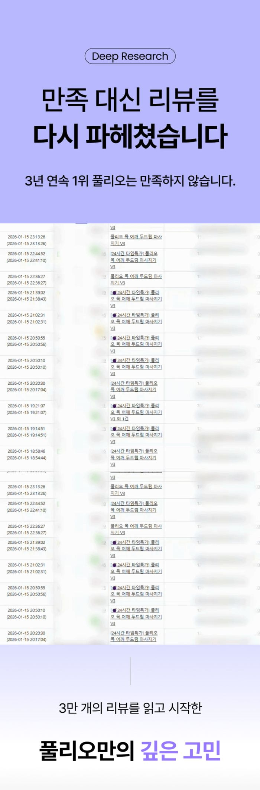
풀리오/목어깨라이트 고객 리뷰 반영 업그레이드 — 제품 제작하게 된 이유 서사
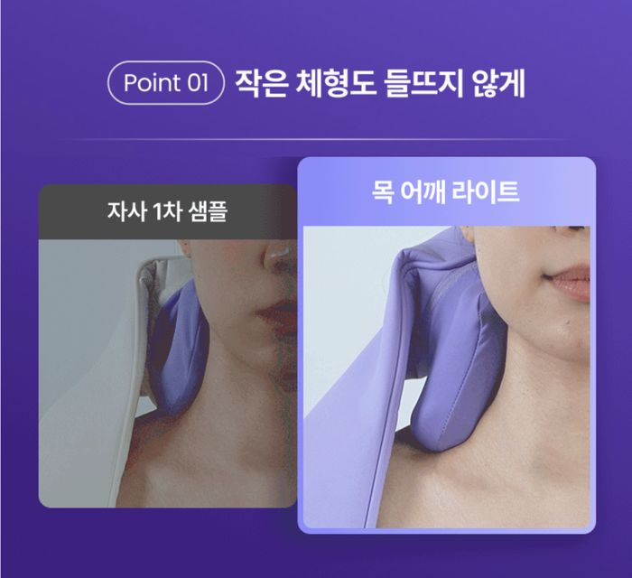
풀리오/목어깨라이트 1차 샘플과 최종본 비교로 개선 과정 시각화
풀리오/웰워크 리뷰 기반 제품 업그레이드 서사
🤖 AI 판정: 제품이 왜 만들어졌는지(개발 동기·고객 반응 반영·개선 히스토리) 내용이 상세페이지에 포함되어 있는가?
MID 대표(브랜드)의 진정성을 담은 편지·메시지를 페이지 내 1회 이상 노출하여 인간적 신뢰를 구축한다.
✅ 베스트 — 백온담처럼 '국산제품 어필 편지'와 '대표 편지'를 페이지 내 배치하거나, 닥터센스처럼 '대표 편지'로 마무리하여 제품 스펙 설명 이후 감성적 신뢰를 한 번 더 강화한다.
❌ 미흡 — 브랜드 서사 섹션 전체가 없고 제품 스펙, 사용법, 구성품 설명만으로 이루어진 구성.
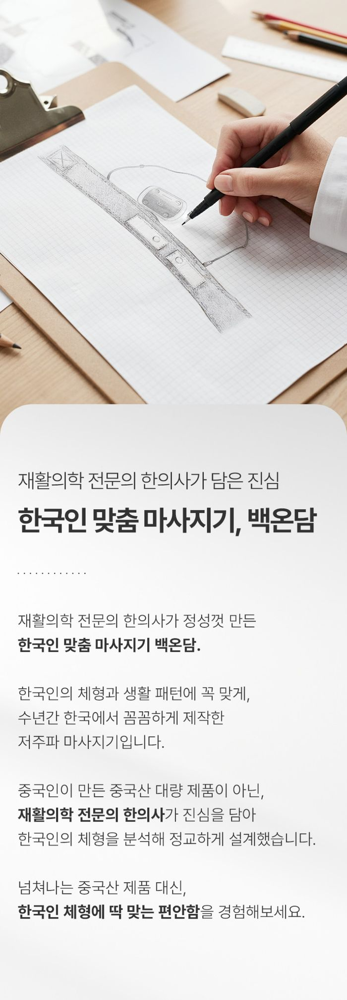
백온담 국산제품 어필 편지 — 브랜드 진정성 서사
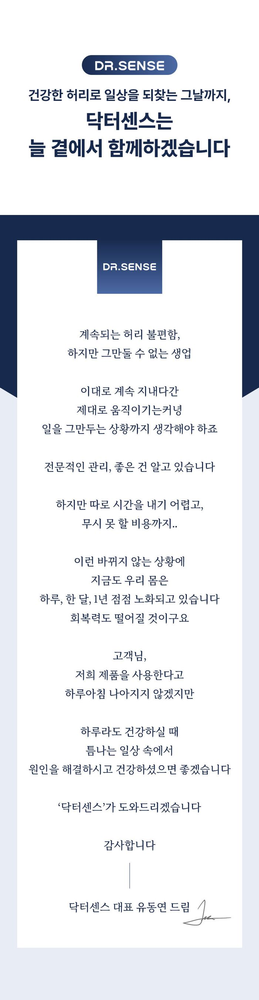
닥터센스 대표 편지로 페이지 마무리 — 감성적 신뢰 구축
🤖 AI 판정: 대표 편지, 제작 철학, 품질 약속 등 브랜드의 인간적 목소리가 상세페이지에 포함되어 있는가?
HIGH 브랜드 성과(누적 판매량, 수상, 언론 노출, 입점 이력)를 수치로 상세페이지 초반에 노출한다.
✅ 베스트 — 95PROBLEM·SLOOM·빌라르처럼 상단에 '누적 N만 개 판매', '브랜드 1위', '방송 N회 출연' 등의 성과 배지를 두어 스크롤 전 신뢰를 선점하고, Well247처럼 '오늘 N명이 구매했어요' 실시간 수치를 추가해 대중 검증을 선언한다.
❌ 미흡 — 브랜드 성과가 페이지 하단에만 있거나, 수치 없이 '많은 분들이 사랑해주시는' 같은 정성적 표현만 사용하는 구성.
풀리오/V3 브랜드 성과 상단 배치 및 런칭 성과 수치화
뷰앤디 누적 판매 50,000대 수치화를 상세 본문 첫 챕터에 배치
오버더바이크 22만명 선택 + 전현무 내돈내산을 가격 블록 위 한 줄로 배치
🤖 AI 판정: 누적 판매량, 수상 이력, 언론 보도, 오프라인 입점 등 브랜드 성과 수치가 페이지 초반(스크롤 30% 이내)에 배치되어 있는가?
핵심 차별점
● 핵심가치/USP
value/oneline
한 줄 차별카피
상세페이지 진입 직후 3초 안에 소비자의 이탈을 막는 단 하나의 문장이, 이후 모든 설득 과정의 출발점을 결정한다.
HIGH 페인포인트와 해결책을 한 문장에 압축해 제품명 바로 아래 배치한다.
✅ 베스트 — '하루 10분, 뭉친 목·어깨를 손 마사지처럼 풀어주는 유일한 마사지기' 형태로 사용 시간·부위·효과를 압축해 제품명 200px 이내에 배치
❌ 미흡 — '최고의 마사지 경험을 선사합니다' 같은 추상적 슬로건, 또는 브랜드명만 반복하는 문장
풀리오 V3 56% 런칭 할인 배너와 함께 '마사지 하는 장면을 손으로 마사지 하는 장면으로 표현'해 한 눈에 효과를 전달
오버더바이크 '하루 10분, 전신 근력+유산소+코어운동을 한번에' — 사용 시간과 효과를 제품명 아래 한 줄에 압축
🤖 AI 판정: 스크롤 없이 보이는 첫 화면에서 '누가·어떤 문제를·어떻게 해결하는지'가 한 문장으로 파악되는가?
MID 타겟이 자신의 상황을 즉시 인식하도록 구체적 사용 맥락을 카피에 담는다.
✅ 베스트 — '러닝 후 뭉친 종아리, 15분 안에 풀린다' 처럼 운동 후·장시간 착석 후 등 실제 사용 시점을 명시
❌ 미흡 — 모든 사람에게 맞으려다 아무도 공감하지 못하는 범용 문장
롤리(ROLLY) '많이 걸은 날', '러닝/하체 운동한 날' 등 타겟 상황을 카피에 직접 명시해 공감 유발
🤖 AI 판정: 카피를 읽은 구매 타겟이 '나를 위한 제품'이라고 느낄 만큼 상황이 구체적인가?
value/points
N가지 핵심포인트
마사지기는 기능이 다양해 소비자가 '무엇이 다른지' 스스로 정리하기 어려우므로, 핵심포인트를 구조화해 제시하는 것이 구매 결정 속도를 단축시킨다.
HIGH 핵심포인트는 3~5개로 압축하고 아이콘·번호·체크마크로 시각화해 한눈에 파악되도록 한다.
✅ 베스트 — 아이콘+짧은 제목(2~5자)+한 줄 설명 구조로 '① 3단계 강도조절 ② 온열 55°C ③ 방수 IPX4' 형태로 명시. GIF로 직접 시연하면 더 강력
❌ 미흡 — 10개 이상 나열해 희석되거나, 텍스트만 빼곡해 스캔이 불가능한 형태
넛세 메인 소구포인트를 'Check point'로 짧은 후킹멘트 형태로 한 눈에 표현
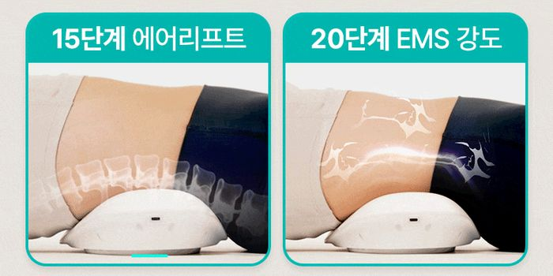
휴플러스 백플로 체크포인트를 GIF로 자사 제품으로 직접 표현 — 아이콘이 아닌 실제 작동 GIF로 강화
🤖 AI 판정: 핵심포인트가 3~5개 이내로 정리되어 있으며, 각 항목이 스캔 독자도 5초 안에 읽을 수 있는 분량인가?
MID 각 포인트는 추상 표현 대신 수치·스펙·측정값으로 정량화해 서술한다.
✅ 베스트 — '99.8% 전 면적 타겟팅', '1분 200회 회전', '진동 4단계' 처럼 소수점·단위 포함 수치로 경쟁 제품과 객관적 차별화
❌ 미흡 — '강력한 진동', '효과적인 마사지' 같은 검증 불가 형용사만 사용
더스크랙 '99.8% 전 면적 타겟팅', '326개 돌기', '108.2% 열감 증가' — 소수점 수치로 정량화해 신뢰도 극대화
🤖 AI 판정: 포인트 설명에 '강력한', '효과적인' 같은 형용사 대신 측정 가능한 수치가 포함되어 있는가?
value/vs_compete
경쟁비교 우위
마사지기 시장은 유사 제품이 넘치기 때문에, 경쟁 카테고리(마사지샵·타 제품·구형 기기)와의 명시적 비교가 없으면 소비자는 가격만으로 판단한다.
HIGH 마사지샵·경쟁 기기·구형 제품과 구체적으로 비교해 자사 제품의 우위를 수치나 구조로 보여준다.
✅ 베스트 — '마사지샵 2회 비용 = 이 제품 1개, 평생 사용'처럼 서비스 비용 비교 or 경쟁 제품과의 기능 비교표를 이미지/표 형태로 제시
❌ 미흡 — '타사 제품과 다릅니다'라는 선언만 있고 구체적 비교 근거 없음
롤리(ROLLY) '경락 2번 금액으로 집에서 평생 편하게' — 서비스 비용과 직접 비교해 ROI 카피로 가격 정당화
SLOOM 골반케어 가격비교 섹션에서 비용 대비 효과를 직접 수치화
🤖 AI 판정: 경쟁 대상(서비스 또는 타 제품)과 명확히 비교한 섹션이 존재하며, 우위가 수치 또는 시각 자료로 증명되는가?
MID 자사 제품이 경쟁 제품 대비 개선된 점을 개발·업그레이드 스토리로 보여준다.
✅ 베스트 — 1차 샘플과 최종본 비교 이미지, 고객 리뷰 반영 업그레이드 내역 전후 나열, 또는 경쟁 제품 vs 자사 기능 비교표
❌ 미흡 — '업그레이드 버전 출시'라는 텍스트만 있고 무엇이 달라졌는지 설명 없음
풀리오 목어깨 라이트 1차 샘플과 최종본 비교로 제작 과정의 개선점을 시각화
스포첵 도스틱 마사지건과 비교 섹션을 별도로 구성해 자사 제품의 차별성 소구
🤖 AI 판정: 이전 버전 또는 유사 제품과 비교해 무엇이 어떻게 개선되었는지가 시각적으로 표현되어 있는가?
value/price_value
가성비
헬스케어 기기는 체감 가치가 불명확하므로, '이 가격에 이만큼의 가치'를 구체적 수치로 환산해야 구매 결정 장벽이 낮아진다.
HIGH 제품 가격을 일 단위 또는 서비스 비용 대비 금액으로 환산해 실질 가성비를 체감하게 한다.
✅ 베스트 — '하루 82원으로 매일 마사지' 또는 '마사지샵 3회 비용으로 평생 관리' 형태의 일 단위·서비스 비용 환산 카피를 가격 블록 근처에 배치
❌ 미흡 — 가격만 나열하고 소비자가 스스로 가치를 판단해야 하는 구조
롤리(ROLLY) '경락 2번 금액으로 집에서 평생 편하게' — 1회 비용 vs 제품 비용 비교로 합리적 구매 결정 유도
풀리오 웰워크 '200원짜리 의자와 같지만 더욱 저렴하다'고 어필해 소비자에게 가치 정당화
🤖 AI 판정: 가격을 '하루 N원' 또는 '마사지샵 N회 비용' 등 비교 가능한 단위로 환산한 카피가 상세페이지에 존재하는가?
MID 혜택·사은품을 금액으로 수치화하고 총합을 명시해 체감 할인폭을 극대화한다.
✅ 베스트 — '사은품 60,000원 + 쿠폰 5,000원 + 배송비 페이백 55,000원 = 총 120,000원 절약' 형태로 혜택 항목별 금액 후 합산 노출
❌ 미흡 — '사은품 증정'만 표기하고 금액을 명시하지 않아 소비자가 가치를 체감하지 못함
풀리오 허벅지 마사지기 혜택 항목 개별 금액 명시 후 총 120,000원 절감으로 합산 — 체감 할인폭 극대화
🤖 AI 판정: 혜택 항목들이 개별 금액으로 표기되고 마지막에 '총 N원 절약' 형태로 합산되어 있는가?
value/positioning
포지셔닝
마사지기는 '저가 일반 vs 프리미엄 전문가용'의 가격대가 넓어서 포지셔닝이 불명확하면 소비자는 가장 싼 제품을 선택한다.
HIGH 브랜드 누적 성과(판매량·수상·입점 실적)를 수치로 선언해 시장 내 위치를 선점한다.
✅ 베스트 — '누적 5만 대 판매' / '네이버 마사지기 카테고리 1위' / '약국·병원 입점' 등 외부 검증 지표를 제품명 200px 이내에 배치
❌ 미흡 — 판매 실적이나 수상 이력이 있음에도 상세페이지 하단에 묻히거나 아예 노출하지 않음
BENTIFLEXIER 약국 입점·특허청 등록·국가대표 선수 사용을 제품명과 썸네일에 직접 삽입해 권위 선점
오버더바이크 '판매량 1위, 22만명이 선택한 원조 #한뼘바이크' + 연예인 내돈내산을 가격 블록 위 한 줄에 병기
🤖 AI 판정: 상세페이지 초반(스크롤 1화면 이내)에 누적 판매량, 수상, 인증, 오프라인 입점 등 시장 검증 수치가 등장하는가?
MID 전문가·권위자 사용 또는 오프라인 검증 사실을 온라인 상세페이지에 시각적으로 이식한다.
✅ 베스트 — 정형외과 자문 의사 실명+소속 명시, 또는 골프선수·발레리나 등 해당 분야 전문 사용자가 사용하는 장면 이미지로 포지셔닝 강화
❌ 미흡 — '전문가 추천' 텍스트만 있고 실명·소속·인증 근거가 없어 검증 불가
Archpin 아큐스터 발레리나 무용수 아이템으로 소구해 전문가 사용 포지셔닝 구축
SLOOM 엘보케어 다양한 종목 골프선수 사용 소구로 전문 스포츠 포지셔닝 강화
🤖 AI 판정: 정형외과 전문의, 물리치료사, 운동선수, 미용 전문가 등 권위자 사용 사실 또는 오프라인 검증 이력이 이미지나 배지로 노출되는가?
value/gift
선물 제안
마사지기·헬스케어 기기는 생일·명절·부모님 선물 수요가 높아, 선물 포장·메시지 카드 등 선물 경험을 구체화하면 구매 전환 시점을 앞당길 수 있다.
MID 선물 대상(부모님·배우자·직장 동료)과 상황(명절·생일·감사 선물)을 명시해 선물 구매자의 결정을 돕는다.
✅ 베스트 — '부모님 생신, 직장인 어깨 피로 선물로 최적'처럼 수신자와 상황을 명시. '이런 분께 추천' 섹션에 선물 목적 포함
❌ 미흡 — 선물 기능 없이 개인 구매만 상정한 카피, 또는 선물하기 CTA만 있고 선물 맥락 설명 없음
풀리오 목어깨 라이트 CTA 레이어에 '선물하기' 버튼을 장바구니 바로 옆에 배치해 선물 구매 동선 분리
🤖 AI 판정: 상세페이지에 '선물 추천 대상'과 '선물하기 좋은 상황'이 구체적으로 언급되어 있는가?
LOW 선물 포장·메시지 카드·사은품 구성을 이미지로 시각화해 선물로서의 완성도를 전달한다.
✅ 베스트 — 선물 박스 언박싱 이미지, 메시지 카드 샘플, '선물 포장 무료' 혜택 배지를 가격 블록 근처에 배치
❌ 미흡 — 구성품 스펙 나열만 있고 선물로서의 패키지 완성도가 시각적으로 표현되지 않음
🤖 AI 판정: 선물 포장 또는 구성품 이미지가 상세페이지에 포함되어, 받는 사람이 경험할 언박싱 장면을 예상할 수 있는가?
value/price_anchor
가격 앵커링(정가→할인→쿠폰가)
헬스케어 기기는 고관여 구매이므로, 소비자가 '얼마나 싸게 사는지'를 단계별로 체감하게 해야 결제 직전 이탈을 막는다.
HIGH 정가(취소선)→현재 판매가→쿠폰 적용 최저가 3단계로 가격을 노출해 할인 체감을 극대화한다.
✅ 베스트 — 정가 241,000원(취소선) → 판매가 129,000원(46% 뱃지) → 쿠폰 적용 109,000원 + '쿠폰 받기' 버튼 인라인 삽입. 무이자 월 할부 금액도 함께 표기
❌ 미흡 — 현재 판매가만 표기하거나, 쿠폰 안내가 별도 팝업에만 있어 가격 블록에서 연결되지 않음
풀리오 V3 정가 241,000원 → 129,000원(46% 할인) 앵커링 + 35% 뱃지로 시각적 충격 유도
롤리(ROLLY) 소비자가 29만원 → 판매가 19만9천원 → 쿠폰 17만9천원 3단계 앵커링 + 회원가입 2만원 추가 할인 CTA 삽입
Well247 페이스튠핏 공식몰 특가 → 가정의 달 쿠폰가 2단계 구조로 카카오 DB 확보와 구매 전환 동시 달성
🤖 AI 판정: 가격 블록에 정가(취소선)·현재가·쿠폰/카카오페이 적용가 3단계가 모두 노출되어 있는가?
HIGH 할인 이유(런칭 이벤트·기간 한정·기념일)를 명시해 가격의 정당성과 긴급성을 동시에 부여한다.
✅ 베스트 — '런칭 기념 56% 한정 할인 D-3' 또는 '이번 기획 300개 한정 특가' 형태로 할인 이유와 기간·수량을 함께 표기. 카운트다운 타이머와 결합하면 더 효과적
❌ 미흡 — 할인율만 표기하고 이유 없이 상시 할인처럼 보여 소비자가 '더 기다리면 더 싸지겠다'고 판단하게 만듦
풀리오 V3 '라이트 런칭 기념 ~56% + 선착순 사은품' 배너 + 이벤트 종료 타이머 상단 고정으로 할인 이유와 긴급성 동시 전달
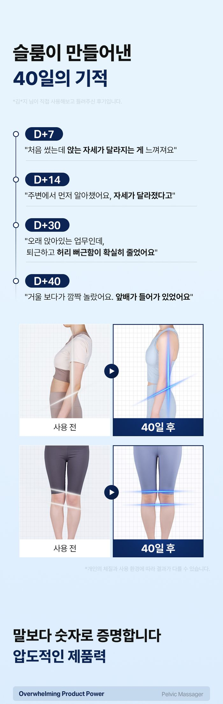
SLOOM 골반케어 런칭 이벤트·공식몰 단독 이벤트 프레임으로 할인 정당성 부여
🤖 AI 판정: 현재 할인이 적용되는 이유(기간·수량·이벤트명)가 가격 블록 또는 상단 배너에 명시되어 있는가?
제품력 증명
● 기능/구조
feature/principle
작동원리
마사지기·헬스케어 디바이스는 눈에 보이지 않는 작용 메커니즘을 시각화해야 소비자가 효과를 납득하고 구매를 결정한다.
HIGH 작동 원리를 GIF나 도식으로 직관적으로 보여준다.
✅ 베스트 — EMS 전류가 근육 층위를 파고드는 단면 애니메이션, 진동이 근막을 이완시키는 GIF, 또는 '자극 → 혈류 증가 → 이완' 3단계 도식처럼 신체 내부 변화를 순서대로 보여준다.
❌ 미흡 — 단순히 '저주파로 근육을 자극합니다'라는 텍스트만 있거나, 제품 외관 사진만 반복 노출하여 실제 작동 과정을 전혀 보여주지 않는다.
메디큐브 디바이스 진동·흡수 과정을 단계별로 직관적으로 시각화
메디큐브 작동 원리 시각화 연속 이미지
시티파이 Air-Heating Circulation 기술 원리를 GIF 애니메이션으로 표현
SLOOM 발 마사지기 속근육 자극을 물병에 물이 흘러가는 은유로 표현
🤖 AI 판정: 피부·근육·신경 등 신체 내부에서 일어나는 작용 과정이 GIF, 3D 컷어웨이, 또는 단계별 다이어그램으로 시각화되어 있는가?
MID 작동 원리 설명은 의학·과학 근거와 연결하여 신뢰를 확보한다.
✅ 베스트 — EMS 저주파 자극 원리 설명 옆에 '정형외과 전문의 자문 완료' 배지 또는 인체적용시험 그래프를 함께 배치하여 원리의 신뢰도를 보강한다.
❌ 미흡 — 원리 설명 섹션이 이미지 없이 긴 텍스트 단락으로만 채워지거나, 근거 없이 '특허 기술'이라고만 표기한다.
쿼드쎄라 주파수 파동 표를 다수 이미지로 상세 근거 제시
쿼드쎄라 관련 자료 근거 연속 이미지
백온담 한의사 공동개발·EMS 저주파 기술 원리와 자극 효과를 함께 표현
🤖 AI 판정: 논문, 임상 데이터, 전문의 코멘트 등 외부 근거가 원리 설명 바로 옆이나 직후에 배치되어 있는가?
feature/mode
모드·강도
사용자마다 통증 부위와 내성이 다르므로 단계·모드 구성을 명확히 보여줘야 '나에게 맞겠다'는 확신을 주고 반품 불안을 제거한다.
HIGH 모드와 강도 단계를 표·비교 이미지로 명확하게 구분하여 보여준다.
✅ 베스트 — 3단계 온열·5단계 강도 같은 구성을 컬러 그라데이션 표 또는 슬라이더 이미지로 제시하고, 각 단계에 '초보자용 / 일반 / 집중 케어' 같은 체감 설명을 병기한다.
❌ 미흡 — '3단계 강도 조절 가능'이라는 한 줄 텍스트만 있고 각 단계가 어떻게 다른지 전혀 보여주지 않는다.
뷰앤디 앤모드 프로 모드 설명 및 주파수 단계 비교를 다수 이미지로 상세 제시
뷰앤디 앤모드 프로 모드별 상세 설명 이미지
롤리 1분 200회 회전·6단계 강도를 수치로 가격 블록 위에 직접 노출하여 즉시 인지 유도
🤖 AI 판정: 각 모드/강도 단계가 이름·아이콘·체감 설명과 함께 한 화면에 비교 가능한 형태로 제시되어 있는가?
MID 추천 사용 상황과 모드를 매핑하여 선택 가이드를 제공한다.
✅ 베스트 — '운동 전 준비 → 저강도 웜업 모드 / 운동 후 회복 → 고강도 딥 퍼커션 모드' 식으로 상황별 모드 선택법을 도식이나 카드형 레이아웃으로 제시한다.
❌ 미흡 — 모드 나열만 있고 '어떨 때 어느 모드를 써야 하는가'에 대한 안내가 전혀 없어 처음 사용자가 혼란을 겪는다.
SLOOM 발 마사지기 데일리케어 vs 집중케어 제품 선택법을 상세페이지 내 구분 안내
🤖 AI 판정: 사용 목적(완화·관리·집중치료 등) 또는 신체 컨디션별로 어떤 모드·강도를 써야 하는지 안내하고 있는가?
feature/material
소재·구조
피부에 직접 닿는 마사지기는 소재 안전성과 착용 구조가 구매 결정에 직결되며, 특히 민감 피부 고객의 불안을 선제 해소하는 역할을 한다.
HIGH 피부 접촉 소재의 안전성과 재질 특성을 클로즈업 이미지와 함께 설명한다.
✅ 베스트 — 실리콘 헤드 클로즈업 사진에 '의료용 실리콘 / 피부자극테스트 완료' 배지를 오버레이하고, 소재 경도·유연성을 경쟁 제품 소재와 비교 표로 제시한다.
❌ 미흡 — '친환경 소재 사용'이라는 한 줄 문구만 있고 실제 소재명이나 안전 인증이 전혀 명시되지 않는다.
풀리오 목 어깨 라이트 마사지기 마사지 동작을 손으로 마사지 하는 장면으로 치환하여 접촉 느낌과 구조를 직관적으로 전달
풀리오 목 어깨 라이트 마사지기 사용 부위와 접촉 구조 표현 연속 이미지
🤖 AI 판정: 패드·헤드·쿠션 등 피부 접촉 부위의 소재명, 인증(KC·피부자극테스트 등), 텍스처가 클로즈업 사진 또는 단면 도식으로 제시되어 있는가?
MID 제품 구조(내부 설계·지지 구조·착용 방식)를 분해 도식이나 레이어 이미지로 보여준다.
✅ 베스트 — 마사지기 단면을 레이어별로 분리한 폭발도(exploded view) 이미지 또는 '외피 → 쿠션층 → 모터부' 3단 구조 도식을 통해 내구성과 설계 품질을 시각적으로 증명한다.
❌ 미흡 — 외관 제품컷만 여러 각도에서 반복 노출하고 내부 구조나 소재 레이어에 대한 설명이 전혀 없다.
풀리오 목 어깨 라이트 마사지기 1차 샘플과 최종본 구조 비교로 소재·설계 개선점 시각화
더스크랙 326개 돌기 등 구조적 수치를 소수점까지 정량화하여 설계 차별성 전달
🤖 AI 판정: 헤드 어태치먼트 교체 방식, 내부 모터 배치, 착용 벨트 구조 등 눈에 보이지 않는 구조적 설계가 한 화면에서 파악되는가?
feature/tech
핵심기술(POINT 넘버링)
소비자는 기술 차별점을 한눈에 스캔할 수 있을 때만 경쟁 제품 대비 우위를 인지하므로, 번호 넘버링 방식의 구조화된 기술 포인트 제시가 전환율을 높인다.
HIGH 핵심 기술을 POINT 번호로 넘버링하여 스캔 독자도 즉시 파악할 수 있도록 구조화한다.
✅ 베스트 — POINT 1 BLDC 무브러시 모터 / POINT 2 6단계 진동수 조절 / POINT 3 저소음 45dB 이하 — 각각 아이콘+수치+한 줄 설명을 카드형으로 배치하여 스크롤 없이 3대 기술을 모두 인지할 수 있다.
❌ 미흡 — 기술 특장점이 불릿 리스트나 긴 문단으로만 나열되어 스캔 시 어떤 기술이 핵심인지 구분이 되지 않는다.
휴플러스 백플로 체크포인트를 GIF로 자사 제품에 직접 표현하여 기술 포인트를 시각적으로 넘버링
휴플러스 백플로 기술 포인트 GIF 연속 이미지
헤임타 POINT 넘버링 방식으로 필요 순간·효과·기술 포인트를 구조화하여 제시
더스크랙 99.8%·326개·108.2% 소수점 수치로 각 기술 포인트를 정량화
🤖 AI 판정: 기술 차별점이 'POINT 1 / POINT 2 / POINT 3' 형식으로 번호화되어 있고 각 항목에 기술명·작동 원리 한 줄·시각 자료가 세트로 제시되어 있는가?
MID 기술 포인트에 소수점·측정 수치를 사용하여 측정된 데이터처럼 신뢰감을 높인다.
✅ 베스트 — '진동수 2,400rpm', '소음 42dB', '배터리 6시간 지속' 처럼 모든 핵심 기술 포인트에 실측 수치를 병기하고, 비교 대상(경쟁 제품 평균 또는 이전 버전)과 대비한 수치도 제시한다.
❌ 미흡 — '강력한 진동', '조용한 작동', '오랜 배터리 수명'처럼 수치 없는 형용사만 사용하여 소비자가 객관적 비교를 할 수 없다.
더스크랙 소수점 포함 수치(99.8%, 326개, 108.2%)로 기술 포인트 정량화 — 측정된 데이터 신뢰감 형성
쿼드쎄라 주파수 파동 표로 기술 수치 상세 근거 제시
🤖 AI 판정: 각 기술 포인트에 '강력하다·효과적이다' 같은 형용사 대신 Hz, dB, rpm, % 같은 정량 수치가 포함되어 있는가?
feature/oldnew
신·구 비교
기존 제품 보유자와 이전 버전 구매 경험자를 재구매로 전환하려면 업그레이드 내용을 명확한 비교 형식으로 보여주는 것이 가장 설득력이 높다.
HIGH 구버전 대비 신버전의 개선 사항을 Before/After 또는 스펙 비교표로 명확하게 보여준다.
✅ 베스트 — 구버전(V1) vs 신버전(V2) 비교표에 모터 성능·강도 단계·배터리 용량·소재 등 항목별 수치를 병기하고, 개선 항목 옆에 '고객 리뷰 반영' 배지를 달아 신뢰를 강화한다.
❌ 미흡 — '더욱 업그레이드된 신제품 출시'라는 문구만 있고 실제로 무엇이 어떻게 달라졌는지 구체적 비교가 없다.
풀리오 목 어깨 라이트 마사지기 1차 샘플과 최종본 비교로 제작 과정에서의 구체적 개선점 시각화
풀리오 목 어깨 라이트 마사지기 리뷰 기반 제품 업그레이드 버전 출시 내용 표현
뷰앤디 앤모드 프로 업그레이드 내용과 주파수 개선을 다수 이미지로 상세 비교 제시
🤖 AI 판정: 이전 버전과 현재 버전의 주요 변경 사항이 나란히 비교되는 표·카드·슬라이드 형식으로 제시되어 있는가?
MID 업그레이드 이유로 실제 고객 리뷰나 불편 사례를 인용하여 고객 중심 개발임을 강조한다.
✅ 베스트 — 실제 고객 리뷰 캡처 또는 요약('손잡이가 미끄럽다는 후기 반영 → 그립 소재 변경')을 신·구 비교 섹션 상단에 배치하여 '고객이 만든 제품'임을 강조한다.
❌ 미흡 — 신제품 출시 배경 설명 없이 스펙 수치만 나열하거나, 개선 동기가 전혀 언급되지 않는다.
풀리오 목 어깨 라이트 마사지기 고객 리뷰 반영 제품 업그레이드 스토리로 상세페이지 전개
풀리오 목 어깨 라이트 마사지기 제품 제작·업그레이드 이유를 고객 리뷰 기반으로 소구
🤖 AI 판정: 신버전 개발 배경으로 고객 불만·리뷰·VOC가 직접 인용 또는 시각화되어 있는가?
feature/usecase
적용부위·시나리오
마사지기는 적용 부위와 사용 상황이 분명할수록 '내 문제에 맞다'는 즉각적 공감을 이끌어 구매 결정을 앞당긴다.
HIGH 적용 가능한 신체 부위를 실제 착용·사용 이미지와 함께 부위별로 구분하여 보여준다.
✅ 베스트 — 부위별 착용 이미지 6장 이상을 카드형으로 배열하고 각 카드에 '목 뒷근육 집중 이완 / 어깨 승모근 결림 완화 / 종아리 피로 회복' 처럼 부위명+효과를 캡션으로 삽입한다.
❌ 미흡 — 한 부위 착용 이미지만 있거나 '다양한 부위에 사용 가능'이라는 텍스트만 있어 소비자가 자신의 부위에 맞는지 스스로 판단해야 한다.
빌라르 상단 부분에 언제 사용하면 좋은지 부위 및 상황을 명시
빌라르 사용 상황·부위 설명 연속 이미지
스포첵 도스틱 필요한 순간(사용 시나리오)을 부위·상황별로 명확하게 제시
풀리오 풀리지 허벅지 마사지기 사용 시나리오별 실제 착용 이미지 37장으로 부위별 사용법 구성
🤖 AI 판정: 목·어깨·허리·종아리 등 사용 부위별 실착 이미지가 개별 컷으로 제시되고 각 부위에 대한 효과 설명이 병기되어 있는가?
HIGH 사용 타이밍(운동 후·취침 전·장시간 착석 후 등) 시나리오를 구체적으로 제시하여 일상 속 사용 맥락을 그려준다.
✅ 베스트 — '운동 후 20분 / 장시간 앉은 오후 / 취침 전 10분 루틴' 등 3가지 이상의 사용 타이밍 카드를 실제 사용 장면 사진과 함께 배치하고, 각 상황에 맞는 모드·시간 권장 사항도 함께 안내한다.
❌ 미흡 — 제품 기능 설명 위주로만 구성되고 '언제, 어떤 상황에서 쓰면 좋은가'라는 사용 맥락이 전혀 없어 소비자가 자신의 생활에 제품을 투영하기 어렵다.
빌라르 상단에 언제 사용하면 좋은지 구체적 상황 시나리오 명시
헤임타 이럴 때 추천드려요 섹션으로 사용 시나리오·상황 구체화
롤리 많이 걸은 날·러닝/하체 운동한 날 등 타겟 사용 상황 직접 언급으로 공감 유발
오버더바이크 하루 10분 사용 시나리오와 사용 시간·효과를 동시에 수치화한 카피 구성
🤖 AI 판정: 사용 시나리오(언제, 어떤 상황에서, 얼마나)가 구체적 생활 장면 이미지나 카피와 함께 제시되어 있는가?
● 효과-증명형
proof_data/beforeafter
before/after
마사지기·바디케어 기기의 효과는 눈에 보이지 않기 때문에, 실제 사용 전후 비교 이미지가 구매 확신을 만드는 가장 직접적 증거다.
HIGH 동일 부위·동일 각도에서 촬영한 Before/After 이미지를 나란히 배치한다.
✅ 베스트 — Well247 바디컷튠핏처럼 각도별 클로즈업 샷 + 날짜(사용 기간) 레이블을 병기하여 '2주 동안의 변화'를 시각적으로 증명한다.
❌ 미흡 — Before·After라고 표기했으나 조명·각도·거리가 달라 변화가 보이지 않거나, 단순히 '사용 전/후' 텍스트만 있고 이미지가 없다.
Well247 / 바디컷튠핏 V2 B&A를 각도로 표현 + 부위 클로즈업샷으로 2주 동안의 변화 보여줌 + 임상시험 완료 마크
바디앤 / 괄사 마사지기 체험단 B&A를 인체적용시험과 함께 배치해 신뢰 강화
🤖 AI 판정: Before·After 이미지가 동일 부위를 동일 각도에서 촬영해 나란히 비교되는가?
HIGH 사용 기간·횟수 등 조건을 Before/After 이미지 옆에 명시해 재현 가능성을 전달한다.
✅ 베스트 — SLOOM 골반 케어처럼 '40일 기적'이라는 구체적 기간 레이블을 B&A에 부착해 소비자가 자신의 기대 효과 시점을 예측할 수 있게 한다.
❌ 미흡 — Before·After 이미지만 있고 사용 기간·조건이 없어 '언제쯤 이런 효과가 나는지' 알 수 없다.
SLOOM / 골반 케어 마사지기 40일 기적 → 효과 표현 어려운 EMS 허리마사지기 소구에 활용
🤖 AI 판정: B&A 이미지에 사용 기간 또는 사용 횟수 등 조건 정보가 함께 표시되어 있는가?
MID 일반인 체험자(실제 구매자·체험단)의 B&A 후기를 전문 모델 B&A와 함께 제시한다.
✅ 베스트 — 뷰앤디처럼 리뷰 B&A(도움돼요 244개 수치 병기)를 배치해 '나도 될 수 있다'는 공감을 준다.
❌ 미흡 — 전문 모델 or 체험단 홍보 사진만 있고 실제 구매자 B&A가 없어 신뢰성이 떨어진다.
Well247 / 페이스튠핏 리뷰 Before&After로 표시하여 사회적 증거 제시, 도움돼요 244개 수치 병기
Well247 / 페이스튠핏 B&A 리뷰 추가 컷
🤖 AI 판정: 일반인 체험자의 실사용 B&A가 1개 이상 포함되어 있는가?
proof_data/number
수치·통계
추상적 표현('효과적', '확실한 변화')보다 구체적 숫자가 소비자에게 측정된 근거처럼 인식되어 신뢰도와 구매 확신을 높인다.
HIGH 효과를 소수점 포함 수치로 정량화해 '측정된 데이터'처럼 표현한다.
✅ 베스트 — 더스크랙처럼 '99.8% 전 면적 타겟팅', '326개 돌기', '108.2% 열감 증가' 등 소수점이 붙은 정밀 수치를 사용해 경쟁 제품과 구체성 차별화를 한다.
❌ 미흡 — '효과적', '탁월한 성능' 등 추상 표현만 있거나, '약 90%'처럼 측정 근거가 불분명한 어림수만 제시한다.
더스크랙 / 바운스번 스텝퍼 99.8% 전 면적 타겟팅, 326개 돌기, 108.2% 열감 증가 — 소수점 수치로 체감 신뢰도 상승
Archpin / 아큐스터 %로 직관적인 효과 표현
🤖 AI 판정: 효과 수치가 정수가 아닌 소수점 또는 통계 형태(예: 99.8%, 108.2%)로 제시되어 있는가?
MID 핵심 수치는 크고 굵은 타이포로 강조해 스캔 독자도 즉시 파악하도록 한다.
✅ 베스트 — 숫자를 인포그래픽 형태의 대형 타이포로 배치하고 단위(%, kg, cm 등)를 함께 명시해 한 눈에 효과를 인식할 수 있게 한다.
❌ 미흡 — 수치가 본문 텍스트 안에 묻혀 있어 스크롤 중에 지나치거나, 표(테이블) 안에만 있어 시각적 임팩트가 없다.
🤖 AI 판정: 주요 효과 수치가 시각적으로 두드러지게 크게 표현되어 있는가?
MID 수치 출처(설문 응답자 수, 측정 방법, 기간)를 작은 글씨로라도 함께 표기한다.
✅ 베스트 — 고객 만족도 수치 옆에 '(n=OOO, OO기간 자체 설문)'처럼 조사 조건을 병기해 수치의 신뢰성을 뒷받침한다.
❌ 미흡 — 출처 없이 '%' 수치만 단독 사용해 소비자가 자의적 수치라고 의심할 여지를 남긴다.
🤖 AI 판정: 수치 옆에 출처 또는 측정 조건(응답자 수·기간·기관명)이 표기되어 있는가?
proof_data/clinical
임상·시험성적
헬스케어·마사지기 카테고리에서 인체적용시험 결과나 공인기관 시험성적서는 효과 주장에 가장 강력한 공신력을 부여하며, 고가 제품일수록 이 섹션의 유무가 구매 허들을 결정한다.
HIGH 인체적용시험 또는 공인기관 시험성적서 원본 이미지를 상세페이지에 직접 노출한다.
✅ 베스트 — 뷰앤디 앤모드처럼 인체적용시험 결과지 이미지 전체를 여러 컷으로 상세 노출하고 핵심 수치(체지방률 변화, 골격근량 개선)를 강조 표시한다.
❌ 미흡 — '임상 테스트 완료'라는 텍스트 문구만 있고 실제 시험 결과지나 수치가 없어 공신력이 없다.
뷰앤디 / 앤모드 프로 국산 + 인체적용시험결과 이미지 다수 배치
뷰앤디 / 앤모드 프로 인체적용시험결과 상세 컷
메디니 / 셀룰라 다이어트 롤러 개선효과 인체시험 결과 배치
바디앤 / 괄사 마사지기 인체적용시험 결과 배치
🤖 AI 판정: 인체적용시험 결과 또는 공인기관 시험성적서 이미지가 상세페이지 본문에 포함되어 있는가?
HIGH 시험성적서에서 소비자에게 의미 있는 핵심 수치만 발췌해 별도 요약 카드로 제시한다.
✅ 베스트 — SLOOM 발 마사지기처럼 임상시험 결과지 이미지와 함께 핵심 수치(혈액순환 개선율, EMS 자극 근전도 측정치 등)를 별도 강조 카드로 재구성해 소비자가 결과를 빠르게 이해하도록 한다.
❌ 미흡 — 시험성적서 원본 스캔 이미지만 있어 수치가 무슨 의미인지 소비자가 알 수 없다.
SLOOM / 발 마사지기 임상시험 결과 이미지
메디니 / 셀룰라 다이어트 롤러 인체시험 결과 추가 컷
🤖 AI 판정: 시험성적서 원본 외에 핵심 수치를 발췌·요약한 인포그래픽 또는 요약 카드가 존재하는가?
MID 임상·시험 완료 마크(배지)를 히어로 또는 제품 소구 섹션 상단에 배치해 스크롤 전 신뢰를 선점한다.
✅ 베스트 — Well247 바디컷튠핏처럼 B&A 이미지 위에 '임상시험 완료' 마크를 오버레이해, 효과 이미지와 공신력 배지를 동시에 노출한다.
❌ 미흡 — 임상 결과가 있지만 상세페이지 하단에만 위치해 대부분의 소비자가 스크롤 전 이탈한다.
Well247 / 바디컷튠핏 V2 B&A 이미지에 임상시험 완료 마크 병기
벨롭 / 지압슬리퍼 시험성적서 섹션 별도 구성
🤖 AI 판정: 임상시험 완료 또는 시험성적 획득을 나타내는 배지·마크가 상세페이지 상단부(스크롤 전 영역)에 노출되어 있는가?
proof_data/experiment
실험 데모
EMS·진동·온열 등 눈에 보이지 않는 작용 원리를 GIF·비교 실험·3D 시각화로 보여주면 소비자의 이해와 효과 체감도가 즉각 높아진다.
HIGH 제품의 핵심 작동 원리(자극·진동·열 전달 경로)를 GIF 또는 애니메이션으로 시각화한다.
✅ 베스트 — SLOOM 발 마사지기처럼 속근육 자극 경로를 '물병에 물이 흘러가는 비유 GIF'로 표현하거나, 휴플러스처럼 사용법과 효과를 하나의 GIF로 보여줘 소비자가 즉시 이해하도록 한다.
❌ 미흡 — 작동 원리를 텍스트('EMS 저주파 자극으로 근육이 수축됩니다')로만 설명하거나 정적 이미지에 화살표만 그려 직관적 이해가 어렵다.
SLOOM / 발 마사지기 속근육 자극을 물병에 물이 흘러가는 것으로 표현 → EMS 자극 직관적 시각화
휴플러스 / 백플로 허리 마사지기 한눈에 사용법 + 효과 알 수 있는 GIF로 제품 설명
휴플러스 / 백플로 허리 마사지기 체크포인트를 GIF로 자사 제품 기능 표현
🤖 AI 판정: 제품 작동 원리를 GIF, 동영상, 또는 인터랙티브 애니메이션으로 시각적으로 보여주는 콘텐츠가 있는가?
MID 자극 강도·파동·주파수를 그래프나 파형 도표로 수치화해 경쟁 제품과 차별성을 보여준다.
✅ 베스트 — 쿼드쎄라 티탄T1처럼 주파수 파동 표를 여러 컷으로 상세 제시하고, '이 제품이 진짜인 이유' 섹션에서 타 제품과 파형 비교를 보여줘 기술 우위를 증명한다.
❌ 미흡 — 주파수 수치(예: 30Hz)를 텍스트로만 언급하고 시각화가 없어 소비자가 그 의미를 체감하지 못한다.
쿼드쎄라 / 티탄T1 디바이스 주파수 파동 표 상세 제시 + 관련 자료 근거 다수 배치
쿼드쎄라 / 티탄T1 디바이스 주파수 파동 추가 컷
🤖 AI 판정: 주파수·파동·강도 등 기술 스펙을 그래프, 파형, 또는 비교 도표로 시각화하고 있는가?
MID EMS·저주파 등 비가시적 자극을 체표 또는 근육 단면 3D 일러스트로 표현한다.
✅ 베스트 — Archpin 아큐스터처럼 3D 신체 일러스트로 효과 부위와 자극 경로를 입체적으로 표현하거나, 백온담·닥터센스처럼 EMS 자극이 근육층까지 도달하는 과정을 체표 단면 이미지로 보여준다.
❌ 미흡 — 제품 사진만 있고 자극이 신체 어느 근육층까지 도달하는지 보여주는 시각 자료가 없다.
Archpin / 아큐스터 효과 3D 표현으로 자극 부위 시각화
Archpin / 아큐스터 효과 3D 표현 추가 컷
백온담 / EMS 허리 마사지기 EMS 자극 효과 신체 표현
닥터센스 / 자연복대자극기 EMS 자극 표현
🤖 AI 판정: 피부 아래 자극 경로나 근육 수축 과정을 3D 일러스트 또는 신체 단면도로 시각화하고 있는가?
● 효과-연출형
proof_lifestyle/lifestyle
라이프스타일 연출
마사지기는 사용 맥락이 구매 동기와 직결되므로, 구매자가 자신의 일상에 제품을 투영할 수 있는 라이프스타일 이미지가 공감과 전환을 동시에 끌어낸다.
HIGH 구매자의 실제 사용 타이밍(아침 기상 후·운동 후·취침 전 등)을 이미지와 짧은 카피로 명시한다.
✅ 베스트 — '러닝 후 종아리 뭉침', '장시간 앉아 있는 날 허리' 등 구체적 상황+부위를 한 컷에 담고, 배경과 의상이 해당 상황과 일치한다.
❌ 미흡 — 흰 배경 제품 단독컷만 있거나, '편안한 일상'처럼 추상적 카피만 있고 씬이 없다.
롤리(ROLLY) 상세 본문 카피에 '많이 걸은 날', '러닝/하체 운동한 날' 사용 타이밍 직접 명시 — 공감 유발 우수 사례
풀리오 — 풀리지 허벅지 마사지기 아침 기상 후 / 운동 후 / 취침 전 등 시나리오별 실제 착용 이미지 37장 구성
🤖 AI 판정: 상세페이지에 '언제 쓰는지'를 나타내는 사용 타이밍 카피 또는 씬이 1개 이상 존재하는가?
MID 특정 타겟층(직장인·운동인·주부 등)이 자신의 후기라고 인식할 수 있도록 사용자 유형별 라이프스타일 씬을 분류해서 보여준다.
✅ 베스트 — '직장인 야근 후 목·어깨', '운동 후 종아리', '수험생 허리' 등 타겟별로 씬을 분류하고, 각 씬에 부위별 효과 텍스트가 삽입되어 있다.
❌ 미흡 — 모델 1명이 한 가지 상황에서만 등장하거나, 모든 컷이 동일한 배경·의상으로 반복된다.
풀리오 — 웰워크 마사지 의자 허리디스크 / 수험생 엄마 / 3달 사용 후기 등 타겟별로 분류한 블로그 UGC 삽입
🤖 AI 판정: 이미지 또는 캡션에서 2개 이상의 서로 다른 사용자 유형·상황이 구분되어 제시되어 있는가?
LOW 라이프스타일 이미지의 배경·소품·조명이 브랜드 톤과 일치하도록 연출해 제품 이미지를 프리미엄하게 유지한다.
✅ 베스트 — 실내 홈케어 분위기의 침실·소파 배경, 통일된 색조, 깔끔한 의상으로 '갖고 싶은 일상'을 연출한다.
❌ 미흡 — 배경이 어수선하거나, 컷마다 톤이 달라 브랜드 통일감이 없다.
🤖 AI 판정: 라이프스타일 컷의 배경·톤·스타일링이 브랜드 전체 이미지와 일관성이 있는가?
proof_lifestyle/situation
사용 상황컷
마사지기는 '어떻게 쓰는지'를 직관적으로 보여주지 않으면 사용법에 대한 불안이 구매 이탈로 이어지기 때문에, 실제 착용·접촉 장면이 텍스트 설명보다 훨씬 강한 설득력을 갖는다.
HIGH 제품이 신체 어느 부위에 어떻게 밀착되는지를 클로즈업 컷으로 보여준다.
✅ 베스트 — 목·어깨·허리·종아리 등 해당 부위에 밀착된 클로즈업 컷에 마사지 동작과 피부 접촉면이 선명하게 보이고, 캡션에 '어느 부위에 어떻게 대는지' 설명이 병기된다.
❌ 미흡 — 제품만 단독으로 놓인 컷이거나, 모델이 멀리 떨어져 있어 실제 접촉 여부가 불분명하다.
풀리오 — 목 어깨 라이트 마사지기 마사지 하는 장면을 손으로 직접 마사지하는 장면으로 표현 — 사용 부위와 동작을 직관적으로 시각화한 우수 사례
풀리오 — 풀리지 허벅지 마사지기 부위별 사용법 + 기능 + 구성품 순서로 착용 이미지 37장 구성
🤖 AI 판정: 신체 부위에 제품이 직접 접촉하는 클로즈업 컷이 1개 이상 존재하는가?
HIGH GIF 또는 영상 클립으로 제품의 작동 장면(진동·압박·움직임)을 동적으로 보여준다.
✅ 베스트 — 진동 파형·압박 동작·슬라이딩 움직임이 GIF로 표현되어 있고, 1개 GIF당 1개 핵심 기능에 집중하며 텍스트 최소화로 직관적 이해를 돕는다.
❌ 미흡 — 정지 이미지만 있어 작동 여부를 상상해야 하거나, GIF가 있어도 화질이 낮거나 너무 빨라 인지가 어렵다.
휴플러스 — 백플로 허리 마사지기 한눈에 사용법+효과 알 수 있는 GIF로 제품 설명. 체크포인트를 아이콘 대신 GIF로 자사 제품으로 표현
SLOOM — 발편한케어 발 마사지기 속근육 자극을 물병에 물이 흘러가는 것으로 시각화 — 보이지 않는 효과를 물리적 비유로 표현한 참고 사례
시티파이 — 스타일랩 미니 의류관리기 기술 GIF + 수상 조합으로 권위와 이해 동시 달성 — GIF가 마사지·디바이스류에서 가장 강력한 설득 도구임을 공통 인사이트로 확인
🤖 AI 판정: 제품이 실제로 작동하는 모습을 담은 GIF나 영상이 상세페이지에 포함되어 있는가?
MID 제품이 필요한 구체적 순간(통증·피로 상황)을 먼저 보여준 뒤 제품 사용 장면으로 이어지는 스토리 구조로 배치한다.
✅ 베스트 — '하루 종일 앉아서 허리가 무거운 장면' → '제품 착용 후 편안한 표정 장면'처럼 문제-해결 2컷 구조가 명확하고, 각 컷에 짧은 카피가 붙어 있다.
❌ 미흡 — 제품 기능 나열부터 시작해 사용자의 공감 단계 없이 바로 스펙 설명으로 넘어간다.
빌라르 — 프리미엄 허리 마사지기 상단 부분에 '언제 사용하면 좋은지' 명시 → 사용 상황을 문제 제기 방식으로 배치
스포첵 — 도스틱 '필요한 순간' 섹션을 별도로 구성하여 페인포인트 공감 후 제품 사용 장면으로 연결
🤖 AI 판정: 페인포인트(불편한 상황) 컷 또는 카피 이후에 사용 장면 컷이 이어지는 순서 구조가 존재하는가?
proof_lifestyle/scale
스케일감
마사지기는 실물 크기와 무게감을 온라인에서 판단하기 어렵기 때문에, 손이나 신체와의 비교 컷이 없으면 소비자가 구매 후 실망하거나 구매를 망설이는 주요 원인이 된다.
HIGH 제품을 손에 쥐거나 신체 부위에 댄 컷으로 실제 크기를 직관적으로 전달한다.
✅ 베스트 — 한 손으로 쥔 정면 컷 + 착용 전·후 실루엣 비교가 함께 제공되고, '가로 Ncm × 세로 Ncm' 수치 텍스트가 이미지 내에 병기되어 있다.
❌ 미흡 — 제품 단독 컷만 있고 크기 비교 기준이 없어 실제 크기를 가늠할 수 없다.
블루잉 — 포켓비트 미니 마사지건 컬러를 잘 사용한 젊은 타겟 상세페이지로 소형·휴대성이 핵심 소구 — 손에 쥔 컷으로 컴팩트 크기를 강조한 사례
🤖 AI 판정: 제품의 실제 크기를 신체(손·팔·신체 부위)와 비교해 인식할 수 있는 컷이 1개 이상 존재하는가?
MID 휴대성·보관성이 장점인 제품은 가방·주머니·서랍 등 일상 소품과 함께 찍어 크기 이점을 체감시킨다.
✅ 베스트 — 파우치 안에 넣거나 가방 옆에 놓은 컷 + '헬스가방에 쏙'처럼 직관적 카피가 함께 있어, 구매자가 보관·이동 편의를 즉시 상상할 수 있다.
❌ 미흡 — 휴대용·미니를 표방하면서도 크기 비교 컷이 없고, 크기를 숫자 스펙표로만 제공한다.
95PROBLEM — 발란스핏 종아리 마사지기 컴팩트형 컴팩트형·지퍼형 라인업에서 크기 소구가 핵심 차별점으로 설정된 구조 — 실물 크기 비교 컷의 필요성을 보여주는 사례
🤖 AI 판정: 제품의 휴대성·보관성을 일상 소품(가방·파우치 등)과 비교한 컷이나 카피가 포함되어 있는가?
MID 대형 제품은 설치 후 공간 점유 규모를 시각화해 '우리 집에 놓을 수 있는지' 불안을 선제 해소한다.
✅ 베스트 — 거실 소파 옆·침대 옆에 놓인 실제 공간 연출 컷과 함께 '설치 공간 최소 가로 Ncm × 세로 Ncm 확보 필요' 수치가 명시되어 있다.
❌ 미흡 — 제품 외형 컷만 있고 설치 공간 이미지가 없어, 실제 집에 두었을 때의 크기를 구매자가 전혀 가늠할 수 없다.
풀리오 — 웰워크 마사지 의자 835,000원 대형 마사지 의자 — 생활 공간 연출 컷을 포함한 구매 설득 구조, 설치배송 옵션과 연계해 공간 점유 불안을 해소
🤖 AI 판정: 대형 제품의 경우 실제 생활 공간(거실·침실 등)에 놓인 모습 또는 설치 공간 요구 치수가 제시되어 있는가?
● 디자인
design/color
컬러·외관
제품 컬러와 전반적인 외관 연출은 소비자가 상세페이지에 진입한 첫 0.5초 안에 브랜드 포지셔닝과 제품 품질을 직관적으로 판단하는 기준이 된다.
HIGH 제품의 대표 컬러를 배경·타이포·그래픽 요소에 일관되게 사용하여 브랜드 아이덴티티를 통일감 있게 전달한다.
✅ 베스트 — 블루잉처럼 제품 포인트 컬러를 배경 컬러·아이콘·CTA 버튼에 반복 적용해 한눈에 브랜드 톤을 인식할 수 있고, 스크롤 전체에서 색 계통이 2~3가지로 정제되어 있다.
❌ 미흡 — 섹션마다 배경색이 제각각이거나, 제품 사진 배경과 설명 이미지 배경 컬러가 충돌하여 시각적으로 산만하고 고급감이 없어 보인다.
블루잉 컬러를 잘 사용한 젊은 타겟의 상세페이지로 명시된 사례 — 제품 컬러 기반 일관된 비주얼 톤
🤖 AI 판정: 상세페이지 전반에서 제품 컬러톤과 배경·텍스트 컬러가 일관된 팔레트로 유지되고 있는가?
MID 어두운 배경이나 하이콘트라스트 조합을 의도적으로 활용하여 제품의 강인함·기술력을 시각적으로 강조한다.
✅ 베스트 — 스포첵 도스틱처럼 어두운 배경 위 3D 렌더링 제품 컷을 배치해 '강력하다'는 인상을 색채 연출만으로 전달하며, 경쟁 제품 대비 고급스럽고 전문적인 느낌을 준다.
❌ 미흡 — 흰 배경에 제품 이미지만 놓아 전체 페이지가 평탄하고 임팩트가 없으며, 제품의 기능적 강점이 시각적으로 드러나지 않는다.
스포첵(도스틱) 어두운 배경 + 3D → 강력해보이는 효과로 명시
🤖 AI 판정: 제품 강점(강력한 진동, 기술력 등)을 전달하는 섹션에서 배경 명도와 제품 이미지 대비가 충분히 설정되어 있는가?
MID 컬러 옵션이 있는 제품은 모든 컬러 사진을 동일한 조명·앵글로 촬영하여 선택 과정에서 실망이 없도록 보여준다.
✅ 베스트 — 더스크랙처럼 색상 5종 각각의 이미지를 동일한 배경·광원으로 제공하여 구매자가 컬러 차이를 정확히 비교할 수 있고, 선택 후 실물 수령 시 색차 실망이 없다.
❌ 미흡 — 컬러 옵션 이미지가 없거나 섬네일 한 장으로만 보여주어 구매자가 실물 색상을 예측하지 못하고 반품률이 높아진다.
🤖 AI 판정: 컬러 옵션 이미지가 실제 제품 색상을 왜곡 없이 일관된 조건으로 표현하고 있는가?
design/interior
인테리어 어울림
마사지기·헬스케어 기기는 가정 내 일상 공간에 두고 사용하는 제품이므로, 인테리어에 자연스럽게 녹아드는 모습을 보여주면 '사도 거실에 방치될 것 같다'는 구매 저항을 직접 해소할 수 있다.
HIGH 실제 생활 공간(거실, 침실, 홈 오피스 등)에 제품을 배치한 라이프스타일 컷을 포함하여 구매 후 사용 장면을 구체적으로 상상하게 한다.
✅ 베스트 — 제품이 내추럴 우드 인테리어 거실 소파 옆이나 침대 협탁 위에 자연스럽게 놓인 장면을 보여주어, 구매자가 '우리 집 분위기에도 맞겠다'고 즉시 연상하며 구매 결정을 앞당긴다.
❌ 미흡 — 흰 배경 누끼 컷과 기능 인포그래픽으로만 구성되어 있어 제품이 실제 공간에서 어떻게 보일지 전혀 상상할 수 없고, 인테리어를 중시하는 소비자층에게 어필하지 못한다.
풀리오(목 어깨 라이트 마사지기) 사용 장면을 손으로 마사지하는 장면으로 표현 — 실생활 공간 맥락 시각화의 베스트 사례
풀리오(목 어깨 라이트 마사지기) 실사용 시나리오 중심 이미지 구성 사례
🤖 AI 판정: 상세페이지에 실제 인테리어 공간에 제품이 놓인 라이프스타일 이미지가 1장 이상 포함되어 있는가?
MID 제품의 디자인 언어(소재감, 형태, 컬러)가 현대 홈 인테리어 트렌드와 어울린다는 것을 카피 또는 이미지로 명시한다.
✅ 베스트 — 제품이 '집에 두어도 예쁜 디자인'이라는 카피와 함께 미니멀 인테리어 공간 컷을 나란히 배치하여, 기능과 미감을 동시에 소구하고 선물 구매 동기까지 자극한다.
❌ 미흡 — 제품 기능 설명에만 집중하고 디자인·외관이 공간에서 어떤 역할을 하는지 전혀 언급하지 않아, 인테리어 관심 고객의 공감을 얻지 못한다.
풀리오(웰워크 마사지 의자) 색상 옵션(그레이/블랙)과 공간 배치 이미지를 함께 제공해 인테리어 조화를 시각화한 사례
🤖 AI 판정: 상세페이지 내에서 제품이 인테리어 오브제로서 공간에 잘 어울린다는 메시지(비주얼 또는 텍스트)를 전달하고 있는가?
design/package
패키지
패키지 비주얼은 '언박싱 경험'을 사전에 제시하여 선물 구매 전환율을 높이고, 구성품 명시는 가격 대비 가치를 체감시켜 구매 결정을 단축한다.
HIGH 패키지 박스·구성품을 한 컷으로 펼쳐서 보여주어 구매자가 수령 시 받게 될 내용물을 한눈에 파악하게 한다.
✅ 베스트 — 박스를 열었을 때 제품·충전 케이블·사용설명서·사은품이 정렬된 구성품 컷을 클린 배경 위에 배치하고, 각 구성품에 라벨 텍스트를 달아 가격 대비 풍성한 가치를 시각적으로 증명한다.
❌ 미흡 — 구성품 이미지 없이 텍스트 리스트로만 나열하거나, 제품 단독 컷만 있어 실제 수령 시 무엇이 들어있는지 상상이 어렵고 반품·문의가 증가한다.
풀리오(풀리지 허벅지 마사지기) 사용 시나리오별 구성품 포함 37장 상세 이미지 — 구성품 시각화 베스트 구조
🤖 AI 판정: 상세페이지에 패키지 개봉 컷 또는 구성품 전체 펼침 컷이 포함되어 있는가?
MID 패키지를 선물 맥락(기념일, 부모님 선물 등)으로 연출하여 선물 구매 동기를 자극한다.
✅ 베스트 — '부모님 선물로 딱인 구성'이라는 카피와 함께 리본·쇼핑백이 포함된 패키지 컷을 배치하고, '선물 포장 서비스'를 옵션으로 제공함을 안내하여 선물 구매자의 이탈을 막는다.
❌ 미흡 — 패키지 이미지가 없거나 단순 브라운 박스 컷만 있어 선물 목적 구매자에게 어필하지 못하고, 경쟁 제품 대비 객단가 상승 기회를 놓친다.
메디큐브 구매금액별 사은품 이미지 카드 시각화 — 패키지 구성 가치 전달의 구조적 사례
🤖 AI 판정: 패키지 이미지 또는 카피가 선물용 구매를 명시적으로 유도하고 있는가?
LOW 패키지의 소재·인쇄 품질이 제품 가격대에 걸맞은 프리미엄감을 전달한다는 것을 클로즈업 컷 또는 카피로 보여준다.
✅ 베스트 — 매트 코팅 박스·엠보싱 로고·깔끔한 내지를 클로즈업 컷으로 제시하여 '이 가격에 이런 패키지'라는 가치 인식을 심어주고, 고가 제품일수록 언박싱 자체가 경험 일부임을 강조한다.
❌ 미흡 — 패키지 이미지가 흐릿하거나 저해상도로 촬영되어 오히려 제품 품질에 대한 신뢰를 떨어뜨리고, 고가 제품임에도 저렴해 보이는 역효과가 난다.
🤖 AI 판정: 패키지 질감·마감 수준이 제품 포지셔닝(가격대·브랜드 톤)과 일치하는 이미지로 표현되어 있는가?
● 신뢰
trust/cert
인증·특허·성적서
KC인증·특허·임상시험 성적서는 헬스케어 마사지기 구매자의 안전성 불안을 제거하는 가장 직접적인 신뢰 증거다.
HIGH 인증·특허 배지를 제품명 200px 이내 최상단에 배치한다.
✅ 베스트 — 제품명 바로 아래 첫 줄에 'KC인증 완료', '특허 등록' 배지를 아이콘+문구 조합으로 삽입하고, 상세 본문에 실제 성적서 이미지를 별도 섹션으로 제공한다.
❌ 미흡 — 인증 문구가 상세 본문 하단에만 있거나, 텍스트로만 나열되어 시각적으로 인지하기 어렵다.
BENTIFLEXIER 약국 입점·특허청 등록·기능성 테스트 완료 3종 배지를 이미지 갤러리 컷에 삽입해 의료 권위를 시각적으로 선점
롤리 KC인증 완료 문구를 제품명 바로 아래 첫 줄에 배치해 스크롤 전 신뢰 선점
🤖 AI 판정: KC인증, 특허, 시험성적서 등 인증 배지가 가격 블록 200px 이내(스크롤 전 화면)에 시각적으로 배치되어 있는가?
HIGH 임상시험 또는 인체적용시험 결과를 수치와 이미지로 보여준다.
✅ 베스트 — 인체적용시험 결과를 '피부 탄력 N% 개선', '근육 이완 N% 향상' 등 소수점 수치로 표기하고 공인기관 성적서 원본 이미지를 함께 제공한다.
❌ 미흡 — '임상 검증 완료'라는 문구만 있고 수치나 성적서 원본이 없어 주장의 근거가 불분명하다.
Well247 바디컷튠핏 임상시험 완료 마크를 B&A 이미지에 병기해 효과와 인증을 동시에 제시
메디니 인체시험 결과 이미지를 복수 컷(p1_026~028)으로 구성해 신뢰도 강화
뷰앤디 국산 + 인체적용시험 결과를 전용 섹션으로 상세 구성
🤖 AI 판정: 임상·인체적용시험 결과가 구체적인 수치(개선율, %) 및 성적서 이미지와 함께 제시되어 있는가?
trust/award
수상·판매량·1위
네이버쇼핑 1위·누적 판매량 등 수치화된 외부 검증은 처음 방문한 소비자에게 대중적 선택의 증거를 즉각 전달해 구매 전환을 가속한다.
HIGH 수상·카테고리 1위 배지를 상품명 200px 이내에 배치한다.
✅ 베스트 — '네이버쇼핑 N위', '올해의 제품', '브랜드 대상' 등 배지를 SALE·BEST·HOT 배지와 조합해 상품명 바로 아래에 배치하고, 수상 기관·연도를 함께 표기한다.
❌ 미흡 — 수상 이력이 상세 본문 중간 혹은 하단에 작은 이미지로만 삽입되어 스크롤 전에는 보이지 않는다.
시티파이 네이버쇼핑 의류관리기 통합랭킹 1위 배지를 SALE·BEST·HOT 배지와 함께 가격 블록 상단 배치
넛세 올리브영 1위 포인트를 상세페이지 상단 소구포인트로 활용
🤖 AI 판정: 수상 이력 또는 카테고리 1위 배지가 가격 블록 200px 이내에 시각적으로 노출되어 있는가?
HIGH 누적 판매량을 구체적 숫자로 수치화해 가격 블록 위에 선언한다.
✅ 베스트 — '누적 판매 5만 개 돌파', '22만 명이 선택한' 등 정량 수치를 가격 블록 바로 위 한 줄에 굵게 배치해 대중 검증 효과를 극대화한다.
❌ 미흡 — '많은 분들이 구매한'처럼 추상적인 표현만 사용하고 실제 판매 수치가 없다.
오버더바이크 판매량 1위 22만명 선택 수치를 가격 블록 바로 위에 배치해 대중 검증 선언
뷰앤디 누적 판매 50,000대 수치를 상세 본문 첫 챕터에 배치
🤖 AI 판정: 누적 판매량(N만 개, N만 명)이 구체적인 숫자로 가격 블록 200px 이내에 노출되어 있는가?
trust/expert
전문가 검증
헬스케어·마사지기는 의학적 효능에 대한 불신이 높아, 정형외과 전문의·물리치료사 등 전문가의 자문·추천이 구매 결정의 핵심 허들을 제거한다.
HIGH 전문가 자문·추천을 직책·이름과 함께 시각적으로 제시한다.
✅ 베스트 — 'N년차 정형외과 전문의 OOO 자문', '물리치료사 추천 아이템'처럼 직책·이름·자문 내용을 함께 제시하고 전문가 프로필 사진을 병행해 진위를 강화한다.
❌ 미흡 — '전문가 추천' 문구만 있고 직책·이름이 없어 검증 불가능한 모호한 주장으로 그친다.
SLOOM 골반 케어 15년차 산부인과 전문의 자문 섹션을 상세페이지 상단에 배치
SLOOM 발편한케어 정형외과 전문의 자문 섹션 삽입
블루잉 물리치료사 추천을 상세페이지 초반 신뢰 요소로 배치
🤖 AI 판정: 정형외과 전문의, 물리치료사, 한의사 등 전문가의 직책·이름이 명시된 자문 또는 추천 섹션이 상세 본문 상단 1/3 이내에 포함되어 있는가?
MID 전문 프로 선수·전문가 실사용 장면을 구체적 직군과 함께 소구한다.
✅ 베스트 — 발레리나, 골프 선수, 에스테틱 전문가 등 제품 연관성 높은 전문 직군의 실사용 사진과 함께 '○○ 종목 N년차 선수 사용 아이템'처럼 구체적 맥락을 제공한다.
❌ 미흡 — 연예인 사진만 있고 해당 분야 전문가 사용 근거가 전혀 없어 효능의 전문적 신뢰가 부족하다.
아큐스터 발레리나 무용수 아이템으로 전문 직군 소구
SLOOM 엘보케어 다양한 종목 골프선수 사용 소구
Therabody 프로선수 실사용 인증으로 신뢰 형성
🤖 AI 판정: 운동선수, 의료 전문가 등 해당 분야 전문가의 실사용 장면 또는 추천 인증이 직군 명시와 함께 제시되어 있는가?
trust/review
후기·평점
실구매자 리뷰와 별점은 구매 직전 불안을 해소하는 가장 강력한 사회적 증거로, 수량·진위·다양성 세 요소가 모두 갖춰져야 설득력이 완성된다.
HIGH 리뷰 수·별점을 가격 블록 바로 아래에 숫자와 함께 노출한다.
✅ 베스트 — 별점 4.7 + 리뷰 253개를 가격 블록 바로 아래 배치하고, 리뷰 탭에도 '리뷰 253개'처럼 숫자를 병기해 탭 클릭 전부터 신뢰가 작동하도록 한다.
❌ 미흡 — 리뷰 탭이 있지만 숫자 병기가 없고, 가격 블록 근처에 리뷰 수치가 전혀 노출되지 않는다.
풀리오 V3 별점 4.7 + 리뷰 253개를 가격 블록 바로 아래 배치, 리뷰 탭에 숫자 병기
오버더바이크 리뷰 7,966개(1,594페이지) + Q&A 13,281개 탭 숫자 직접 표시
🤖 AI 판정: 리뷰 개수(N개)와 별점이 가격 블록 200px 이내에 명시되어 있으며, 리뷰 탭에도 숫자가 병기되어 있는가?
HIGH 실사용 UGC(블로그·SNS 후기)를 상세 본문 3번째 섹션 이내에 직접 삽입한다.
✅ 베스트 — 타겟별(직장인/운동 후/수험생 등)로 분류된 블로그·SNS 실사용 후기 3~5장을 상세 본문 기능 설명 이전에 배치해 공감+신뢰를 먼저 확보한다.
❌ 미흡 — 리뷰 탭에만 후기가 있고 상세 본문 내에는 UGC가 전혀 없어 스크롤을 내리기 전에 신뢰 형성이 안 된다.
풀리오 웰워크 '이미 산사람 절대 보지 마세요' 역설 카피 후 블로그 실사용 후기 3장 삽입, 타겟별 후기 분류
풀리오 목어깨 라이트 블로그 후기 스크린샷을 상세 본문 초반에 직접 삽입해 신뢰 선행
🤖 AI 판정: 블로그·SNS 실사용 후기 이미지 또는 캡처가 상세 본문 초반(3번째 섹션 이내)에 직접 삽입되어 있는가?
MID 리뷰의 진위와 다양성을 명시적으로 보여준다.
✅ 베스트 — '조작 리뷰 단 1개도 없습니다' 선언 + 부정적 리뷰 포함 별점 분포 공개 + B&A 후기 조합으로 리뷰 진위를 적극적으로 증명한다.
❌ 미흡 — 5점짜리 후기만 선별 노출하거나 별점 분포 없이 평균 별점만 표기해 조작 의혹을 유발한다.
더스크랙 '조작 리뷰 단 1개도 없습니다' 직접 선언 + 부정 리뷰 포함 111페이지 + 4~5점 분포 공개로 투명성 강화
Well247 리뷰 before&after로 표시 + 도움돼요 244개 수치로 사회적 증거 강화
🤖 AI 판정: B&A 후기, 부정적 리뷰 포함 투명 공개, 별점 분포 등 리뷰 신뢰성을 뒷받침하는 요소가 제시되어 있는가?
trust/as
A/S·환불 보증
마사지기는 고관여·고단가 제품으로 구매 후 고장·불만족에 대한 불안이 크며, 명확한 A/S 기간과 환불 정책은 구매 결정 직전 마지막 심리 허들을 제거한다.
HIGH 무상 A/S 기간과 환불 조건을 가격 블록 혜택 리스트에 수치로 명시한다.
✅ 베스트 — '무상 A/S 365일', '수령 후 30일 100% 환불 보장' 문구를 가격 블록 내 혜택 리스트 또는 CTA 버튼 바로 아래에 아이콘과 함께 배치하고, 세부 조건은 아코디언으로 추가 제공한다.
❌ 미흡 — A/S 조건이 상세 본문 최하단 텍스트에만 있고, 가격 블록 근처에는 전혀 언급이 없어 구매 결정 전에 인지되지 않는다.
풀리오 목어깨 라이트 무상 AS 365일을 혜택 요약 블록(아이콘+텍스트 가로 나열)에 배치
Well247 무상 AS 365일을 가격 블록 바로 아래 배치 + Q&A 1,960건 병기로 AS 신뢰 강화
🤖 AI 판정: 무상 A/S 기간(N일/N년)과 환불 조건(N일 이내 100% 환불 등)이 가격 블록 혜택 리스트 또는 CTA 주변에 구체적 숫자로 노출되어 있는가?
HIGH 고가 제품일수록 100% 환불 보장 배지를 가격 블록 내에 배치한다.
✅ 베스트 — 가격 블록 내에 '100% 환불 보장' 배지를 삽입하고, 아코디언으로 구체적 환불 절차(기간·방법·조건)를 투명하게 공개해 구매 결정 직전 불안을 완전히 제거한다.
❌ 미흡 — 환불 가능하다는 내용이 교환반품 정책 텍스트에만 있고 구매 버튼 주변에는 보증 신호가 전혀 없다.
뷰앤디 '100% 환불 보장' 배지를 가격 블록 내 배치해 구매 결정 직전 불안 제거
풀리오 웰워크 수령 후 30일간 100% 환불을 신뢰 허들 낮추기 요소로 전면 배치
아큐스터 불만족 시 환불 섹션을 상세페이지 상단부에 배치
🤖 AI 판정: '100% 환불 보장', '불만족 시 전액 환불' 등의 배지 또는 문구가 가격 블록 또는 CTA 버튼 근처에 시각적으로 배치되어 있는가?
trust/official_dist
정품·총판
마사지기 시장은 유사품·비공인 유통 피해가 많아 공식몰·공식 총판 인증이 구매 채널 신뢰를 높이고 고객의 정품 확신을 확보하는 핵심 요소다.
HIGH 공식몰·공식 총판 인증을 상단 배너 또는 제품명 근처에 시각화한다.
✅ 베스트 — '공식몰 단독 특가', '국내 공식 총판' 배지를 제품명 바로 아래 또는 상단 배너에 배치하고, 정품 일련번호 확인 방법이나 정품 인증 QR을 함께 제공한다.
❌ 미흡 — 공식몰임에도 별도 표기가 없어 소비자가 정품 여부를 스스로 확인해야 하는 불편함이 있다.
헤임타 비정상 유통경로 판매처 피해 주의 공지를 상단에 배치해 정품 채널 신뢰 강화
블루잉 라피타의 PB 브랜드임을 명시해 모브랜드 신뢰를 공식 채널 신뢰로 이식
🤖 AI 판정: 공식몰·공식 총판·정품 인증 문구 또는 배지가 상품명 200px 이내 또는 페이지 상단 배너에 명시되어 있는가?
MID 유사품·모방품과의 차별점을 비교 이미지로 경고한다.
✅ 베스트 — 모방품과의 외관·성능 비교 이미지를 제공하고 '유사품 피해 주의' 공지를 상단에 배치해 정품 구매의 필요성을 역설적으로 강조한다.
❌ 미흡 — 정품 안내가 전혀 없어 유사품과의 차별화가 되지 않고, 소비자가 저가 유사품을 선택할 위험이 높다.
메디니 모방품과 비교샷을 상세페이지 초반에 배치해 정품 차별성 강조
스포첵 도스틱 상세페이지 배열에 정품인증 섹션 포함
🤖 AI 판정: 유사품·모방품 주의 경고 또는 정품과의 비교 이미지가 상세 본문에 포함되어 있는가?
trust/csr
CSR·기부
헬스케어 브랜드는 사회적 가치를 공유함으로써 단순 제품 판매를 넘어 브랜드 신뢰와 감성적 유대를 형성할 수 있으며, 특히 국산 제조·환경 친화성 소구가 구매 명분을 강화한다.
LOW 국내 제조·친환경 소재 등 사회적 가치를 구체적 사실로 제시한다.
✅ 베스트 — '100% 국내 제조 + 기술력 강조' 섹션에 제조 공장 사진·인증서를 포함하고, 기부 활동이 있다면 '매출 N%를 OO단체에 기부합니다'처럼 구체적 수치와 단체명을 함께 공개한다.
❌ 미흡 — '사회 공헌 브랜드'라는 문구만 있고 구체적 활동 내역이나 수치가 없어 홍보성 문구로만 인식된다.
백온담 100% 국내 제조 + 기술력 강조 섹션을 별도로 구성하고 국산 제품 어필 편지를 상세 본문에 직접 삽입
🤖 AI 판정: 국내 제조, 친환경 소재 사용, 사회공헌 활동 등 브랜드의 사회적 가치가 구체적 사실(제조지, 인증, 기부 금액 등)과 함께 상세 본문에 포함되어 있는가?
LOW 대표 편지·브랜드 스토리로 제조 철학과 진정성을 전달한다.
✅ 베스트 — 대표가 직접 쓴 편지 또는 고객 리뷰를 반영해 제품을 개선한 개발 스토리를 상세 본문에 삽입해 브랜드 철학과 진정성을 전달하고 감성적 유대를 형성한다.
❌ 미흡 — 기능 설명과 가격 정보만 있고 브랜드의 철학이나 제품 탄생 배경이 전혀 없어 브랜드 신뢰 형성이 어렵다.
백온담 대표 편지를 상세 본문 마지막에 배치해 진정성 전달
닥터센스 대표 편지를 상세페이지 배열에 포함
풀리오 목어깨 라이트 고객 리뷰 반영 제품 개발 스토리를 상세페이지 초반 소구로 활용
🤖 AI 판정: 대표 편지, 브랜드 창업 스토리, 제품 개발 배경 등 브랜드의 진정성을 담은 콘텐츠가 상세 본문에 포함되어 있는가?
구매 유도
● 사용가이드
guide/howto
사용법 STEP
마사지기는 처음 손에 드는 순간 '어떻게 쓰는지' 모르면 반품률이 높아지므로, 구매 전 단계에서 이미 사용 장면을 시각적으로 확인시켜 주는 것이 전환과 이탈 방지 모두에 결정적이다.
HIGH STEP별 사용 흐름을 GIF 또는 순번 이미지로 보여준다.
✅ 베스트 — 1단계 전원 ON → 2단계 부위 밀착 → 3단계 강도 선택 → 4단계 방향 이동 순서로, 각 단계마다 실제 착용·동작 GIF를 붙여 텍스트 없이도 이해 가능한 구성.
❌ 미흡 — 사용법을 텍스트 단락으로만 서술하거나, STEP 번호 없이 기능 설명 이미지와 뒤섞어 나열해 순서를 파악하기 어려운 구성.
휴플러스 GIF 한 장으로 사용법+효과를 한눈에 전달하는 구성을 채택, 텍스트 최소화 이미지 최대화 원칙 적용.
풀리오 목·어깨 라이트 마사지기 마사지 동작을 손으로 직접 마사지하는 장면으로 치환해 효과와 사용 부위를 소비자가 직관적으로 이해하도록 표현.
🤖 AI 판정: 사용 단계가 번호가 붙은 순서형 비주얼(GIF·인포그래픽·연속컷)로 제시되어 있는가?
MID 사용 시나리오(언제·어디서)를 구체적 상황 이미지로 제시한다.
✅ 베스트 — 운동 후 뭉친 종아리, 장시간 좌업 후 허리, 취침 전 목 결림 등 3가지 이상의 사용 시나리오 장면을 실제 착용 컷과 함께 제시해 '나도 저렇게 쓰면 되겠다'는 공감 획득.
❌ 미흡 — 흰 배경에 제품 단독컷만 나열하고 언제 어떤 상황에 쓰는지 전혀 언급하지 않는 구성.
빌라르 상세페이지 상단부에 '언제 사용하면 좋은지'를 명시해 구매자가 제품 필요성을 즉시 인지하도록 구성.
스포첵/도스틱 '필요한 순간' 섹션을 별도로 두어 사용 상황을 직관적으로 전달.
🤖 AI 판정: 아침 기상 후, 운동 후, 취침 전 등 실제 사용 타이밍이 이미지·캡션으로 명시되어 있는가?
guide/care
조작·충전·세척
마사지기 구매 후 잦은 CS 문의 1~3위가 충전 방법, 강도 조절, 세척 가능 여부이므로, 상세페이지에서 미리 답변해 두면 CS 비용 절감과 구매 불안 해소를 동시에 달성한다.
HIGH 충전 방법과 배터리 지속 시간을 수치로 명시한다.
✅ 베스트 — USB-C 타입 / 완충 2시간 / 1회 충전 약 120분 사용 가능을 아이콘+수치 인포그래픽으로 제품 사양 섹션에 배치하고, 충전 중 표시등 색상 변화를 GIF 또는 캡처 이미지로 안내.
❌ 미흡 — '충전식'이라고만 표기하거나 배터리 용량(mAh)만 기재해 실제 사용 가능 시간을 소비자가 추측하게 만드는 구성.
🤖 AI 판정: 충전 포트 종류(USB-C 등), 완충 소요 시간, 1회 충전 사용 가능 시간이 구체적 수치로 기재되어 있는가?
MID 강도·모드 조작법을 아이콘 또는 버튼 클로즈업 이미지로 안내한다.
✅ 베스트 — 제품 전면 버튼 클로즈업 이미지 위에 번호 레이블을 붙이고, '1회 누름=강도 1단 / 길게 누름=전원 OFF' 식으로 각 버튼 동작을 표 또는 아이콘 리스트로 정리해 한 화면에 확인 가능하게 구성.
❌ 미흡 — 설명서 PDF 링크만 제공하거나, 제품 전체컷 이미지에 작은 글씨로 버튼 기능을 병기해 모바일 화면에서 판독 불가능한 구성.
휴플러스 체크포인트를 GIF로 자사 제품에 직접 적용해 버튼·기능 조작을 시각화한 구성.
🤖 AI 판정: 버튼 위치, 누르는 횟수·방법과 해당 단계(강도 숫자·모드명)의 변화를 시각적으로 확인할 수 있는가?
MID 세척·위생 관리 방법을 소재별로 구체적으로 제시한다.
✅ 베스트 — 헤드·패드 등 피부 접촉 부위는 분리 후 중성세제 세척 가능, 본체는 마른 천으로 닦기, IPX4 방수 여부 명시 — 이 세 가지를 아이콘+한 줄 설명 형식으로 케어 섹션에 배치.
❌ 미흡 — '물에 닿지 않게 주의' 한 줄만 기재하거나, 세척 방법을 전혀 언급하지 않아 위생 관리가 불가능하다는 불안을 유발하는 구성.
🤖 AI 판정: 세척 가능 부위, 세척 방법(닦기/물세척/분리 세척), 주의사항(방수 등급 또는 침수 금지 여부)이 명시되어 있는가?
guide/technique
부위별·테크닉
마사지기 효과에 대한 의구심이 있는 소비자는 '올바르게 사용해야 효과가 난다'는 전문성 있는 부위별 테크닉 안내를 통해 구매 확신을 얻으며, 이는 반품률 감소와 재구매 만족도 상승으로도 이어진다.
HIGH 주요 케어 부위별 기기 각도·이동 방향을 실제 신체 모델 이미지로 보여준다.
✅ 베스트 — 부위별 클로즈업 컷에 화살표·가이드라인을 오버레이하고, '목은 측면에서 아래 방향 / 종아리는 무릎에서 발목 방향'처럼 이동 방향과 압력 포인트를 캡션으로 명시해 3~5 부위를 각각 한 컷씩 제시.
❌ 미흡 — 전신 모델 한 장에 제품을 들고 있는 이미지만 넣고 구체적인 각도나 방향 안내 없이 '전신에 사용 가능'이라고만 표기하는 구성.
풀리오 목·어깨 라이트 마사지기 마사지하는 장면을 손으로 직접 마사지하는 장면으로 표현해 사용 부위와 동작을 소비자가 직관적으로 이해하도록 구성.
풀리지 허벅지 마사지기 37장 상세 이미지를 부위별 사용법 시나리오 중심으로 구성, 이미지 캡션에 부위별 효과 텍스트 삽입.
🤖 AI 판정: 목·어깨·허리·종아리 등 타깃 부위마다 기기를 대는 각도와 이동 방향이 실제 모델 착용 컷 또는 화살표 오버레이로 표시되어 있는가?
MID 강도·시간 등 테크닉 가이드라인을 수치 기반으로 제시한다.
✅ 베스트 — 회당 5~10분, 하루 1~2회, 강도 1~2단=민감 부위(목·얼굴), 3~4단=근육 이완(허리·종아리) 형태의 매칭 표를 사용 가이드 섹션에 배치하고, 과사용 주의 문구도 함께 명시.
❌ 미흡 — '적당히 사용하세요'처럼 모호한 문장만 있거나, 강도 단계에 대한 설명 없이 버튼 조작법만 안내하는 구성.
SLOOM 발편한케어 EMS 자극을 직관적으로 표현하고, 부위별 케어 방법을 논문 및 정형외과 전문의 자문 기반으로 제시.
🤖 AI 판정: 권장 사용 시간(회당 분·일일 횟수), 강도 선택 기준(초보/강도별 부위 매칭)이 수치 또는 표로 안내되어 있는가?
guide/faq_use
사용 FAQ
구매 전 마지막 관문인 '이게 나한테도 맞을까?' 의구심을 FAQ로 선제 차단하면 문의 없이 구매 결정이 완결되며, 공개된 Q&A 수 자체가 활발한 판매의 사회적 증거로 작동한다.
HIGH 실제 구매자가 가장 많이 묻는 질문 5가지 이상을 상세페이지 내 FAQ 섹션으로 배치한다.
✅ 베스트 — '피부가 예민한데 사용해도 되나요?', '충전하면서 사용 가능한가요?', '임산부도 사용할 수 있나요?', '몇 단계부터 시작하는 게 좋나요?', '효과가 없으면 어떻게 하나요?' 등 실제 구매 전 불안을 유발하는 질문을 아코디언 또는 체크포인트 카드 형식으로 배치하고 브랜드 답변 제공.
❌ 미흡 — FAQ 섹션이 없어 구매자가 Q&A 탭에서 개별 질문을 검색해야 하거나, '자세한 내용은 고객센터로 문의 바랍니다'로 답변을 회피하는 구성.
백온담 궁금한 점을 체크포인트 형식으로 미리 알려줌으로써 구매 전 불안을 상세페이지 내에서 해소하는 구성.
BENTIFLEXIER 198개 Q&A를 공개해 구매자 의문 해소 + 활발한 커뮤니티 증명 효과를 동시에 달성, FAQ 섹션을 '가장 많이 묻는 질문 5가지'로 구조화해 전환율 향상.
🤖 AI 판정: 사용 관련 FAQ가 상세페이지 본문 또는 아코디언 형식으로 5개 이상 포함되어 있는가?
HIGH 사용 금기 대상과 주의사항을 명확하게 안내한다.
✅ 베스트 — 상단 배너 또는 구매 전 주의사항 박스로 '심박조율기 착용자, 임산부, 피부 상처·염증 부위에는 사용 금지' 등 금기 대상을 굵은 글씨와 아이콘으로 강조해, CS 및 반품 분쟁을 사전에 차단.
❌ 미흡 — 주의사항을 제품 박스 동봉 설명서에만 넣고 상세페이지에는 전혀 기재하지 않거나, 맨 하단 작은 글씨로 법적 고지만 처리하는 구성.
쿼드쎄라 '뷰티 디바이스를 구매하기 전 꼭 확인하세요' 팝업·섹션으로 소비자 주의사항을 선제 안내.
Archpin 소비자 안내 공지사항을 팝업 형식으로 노출해 구매 전 필수 확인 사항을 강조.
🤖 AI 판정: 사용 금기 대상(임산부, 심박조율기 착용자, 피부 이상 부위 등) 및 주의사항이 별도 섹션 또는 눈에 띄는 강조 박스로 명시되어 있는가?
LOW FAQ 답변 안에 제품 강점을 자연스럽게 녹여 설득력을 높인다.
✅ 베스트 — '피부가 예민한데 사용 가능한가요?' 답변에 '본 제품은 피부과 테스트 완료 및 KC 인증을 취득해 민감성 피부에도 안전하게 사용 가능합니다'처럼 인증 정보를 근거로 답변하고, 관련 인증서 이미지 링크까지 연결.
❌ 미흡 — '가능합니다' 또는 '개인 차이가 있습니다'처럼 근거 없는 짧은 답변만 제공하거나, FAQ가 상세페이지에 없고 플랫폼 Q&A 탭에만 분산되어 있는 구성.
🤖 AI 판정: FAQ 답변이 단순 Yes/No가 아닌, 제품의 기술적 특징이나 인증 정보를 근거로 제시하고 있는가?
● 구매정보/스펙
info/spec
스펙표
마사지기·헬스케어 제품은 진동수·강도 단계·무게 등 핵심 수치를 스펙표로 명확히 제시해야 비교 쇼핑 단계에서 이탈을 막을 수 있다.
HIGH 핵심 스펙 수치를 가격 블록 위 또는 바로 아래에 1~2줄로 먼저 노출한다.
✅ 베스트 — 롤리처럼 '1분 200회 회전, 6단계 강도 조절'을 가격 블록 위에 한 줄로 요약하여 스크롤 전에 바로 인지 가능
❌ 미흡 — 스펙이 상세페이지 하단 구성품 표 옆에만 있거나 PDF 첨부로만 제공되어 구매 결정 전에 확인하기 어려움
롤리(ROLLY) KC인증 + '1분 200회 회전, 6단계 강도 조절' 구체적 스펙 수치를 가격 블록 위에 노출
🤖 AI 판정: 진동수·강도 단계·무게 등 핵심 스펙이 스크롤 없이 가격 블록 200px 이내에 보이는가?
MID 스펙 항목은 비교 가능한 수치(소수점·통계)로 표현하고 텍스트 설명을 최소화한 표 형태로 제공한다.
✅ 베스트 — 더스크랙의 '326개 돌기', '99.8% 전 면적 타겟팅'처럼 소수점 포함 실측 수치를 표에 삽입하여 경쟁 제품과 즉시 차별화
❌ 미흡 — 스펙표에 '강력한 진동', '고효율 모터' 등 주관적 수식어만 나열하고 실측값 없음
더스크랙(duskrack) '99.8% 전 면적 타겟팅' / '326개 돌기' / '108.2% 열감 증가' 소수점 포함 수치로 측정된 데이터처럼 신뢰 확보
🤖 AI 판정: 스펙 항목이 '강력하다'처럼 추상적 표현 없이 측정 가능한 수치로 기재되어 있는가?
MID KC인증·특허·의료기기 여부 등 법적·안전 정보를 스펙표 내 또는 바로 인접한 위치에 명시한다.
✅ 베스트 — 메디큐브처럼 KC인증번호·제조사·1년 무상 AS·'의료기기 아님' 명시를 테이블 형태로 정리하고 아코디언으로 접어 가독성과 신뢰를 동시 확보
❌ 미흡 — 인증 정보가 완전히 누락되거나 이미지 하단 깨알 글씨로만 표기되어 소비자가 인지 불가
메디큐브 KC인증번호·제조사·1년 무상 AS·'의료기기 아님' 명시를 테이블 정리 + 아코디언 접기
🤖 AI 판정: KC인증번호·제조사·'의료기기 아님' 여부 등 법정 고지 항목이 스펙 영역에 포함되어 있는가?
info/components
구성품
구성품 목록과 이미지를 명확히 제시하지 않으면 '받고 나서 기대와 다르다'는 반품·CS가 급증하고, 세트 업셀 기회도 놓친다.
MID 구성품 전체를 실물 이미지와 함께 명칭·수량을 표로 보여주고 상세 이미지 스토리 흐름 안에 배치한다.
✅ 베스트 — 풀리오처럼 '제품 단독 → 사용 장면 → 구성품' 순서로 썸네일을 구성하고, 구성품 섹션에서는 각 항목을 이미지+명칭+수량으로 나란히 배치
❌ 미흡 — 구성품 설명 없이 박스 사진 한 장만 있거나, 설명서·충전케이블 등 부속품을 누락하여 수령 후 혼란 유발
풀리오 썸네일 순서를 '제품 단독 → 사용 장면 → 구성품' 스토리텔링 흐름으로 구성하라는 적용 아이디어 제시
🤖 AI 판정: 구성품 이미지가 단독 컷으로 제공되고 각 품목의 명칭과 수량이 함께 표기되어 있는가?
LOW 구성품 섹션 아래에 소모품·보조 용품 크로스셀 카드를 배치하여 구성 확인과 업셀을 동시에 처리한다.
✅ 베스트 — 오버더바이크처럼 구성품 섹션 바로 아래에 연관 상품(안장커버·전용 매트 등) 2~3개를 카드형으로 배치하여 페이지 이동 없이 업셀 완성
❌ 미흡 — 구성품 이미지만 있고 관련 소모품·업그레이드 구성 안내 없이 페이지 종료
오버더바이크(OVERTHE) 연관 상품 4종을 옵션 선택 아래 카드형 배치로 자연스러운 업셀 구현
🤖 AI 판정: 구성품 확인 후 자연스럽게 연관 소모품·액세서리를 추가 구매할 수 있는 동선이 있는가?
info/option
옵션·구성 선택
옵션 선택 단계는 구매 직전 최후 관문으로, 선택 피로나 가격 혼란이 발생하면 전환율이 즉시 하락한다.
HIGH 옵션별 가격 차이와 할인율을 드롭다운 안에 직접 표시하고, 품절 옵션은 숨기지 않고 'SOLD OUT'으로 노출한다.
✅ 베스트 — 오브제처럼 옵션 선택마다 가격이 실시간 업데이트되고, 품절 옵션을 그레이 처리로 노출하여 '인기 있어서 소진' 메시지를 역이용
❌ 미흡 — 모든 옵션이 같은 가격으로 표시되거나, 품절 옵션이 목록에서 아예 사라져 소비자가 재고 상황을 알 수 없음
오브제(OBGE) 3단계 드롭다운에서 가격 실시간 반영 + SOLD OUT 옵션 그레이 표시로 인기 증명
뷰앤디(Beaund) '남은 재고 21개' + 'SOLD OUT' 옵션 노출로 옵션 선택 영역 바로 위에서 FOMO 극대화
🤖 AI 판정: 옵션 선택창에서 각 옵션의 가격(또는 추가금액)과 품절 여부가 실시간으로 보이는가?
HIGH 옵션이 복수일 때는 단계형 드롭다운 또는 비교 카드로 선택 피로를 줄이고, 가장 인기 있는 옵션을 'BEST' 뱃지로 선점 표시한다.
✅ 베스트 — 풀리오 웰워크처럼 색상+배송방식을 2단계 필수 선택으로 분리하고 각 단계에서 옵션 의미를 설명하여 고관여 고객의 결정을 지원
❌ 미흡 — 10개 이상의 옵션이 단일 드롭다운에 나열되어 선택 피로 유발, 또는 컬러칩 없이 색상명만 텍스트로 표기
풀리오 — 웰워크 마사지 의자 색상(그레이/블랙) + 배송방식(설치배송/택배배송) 2단계 필수 선택으로 고관여 제품 옵션 설계
🤖 AI 판정: 옵션 수가 4개 이상일 때 단계별 드롭다운 또는 비교 표 형태로 분리되어 있는가?
MID 넛세처럼 옵션 비교 섹션을 상세페이지 본문 내에 삽입하여 '어떤 옵션을 골라야 하는가'를 먼저 해결해 준다.
✅ 베스트 — 넛세처럼 '선택옵션 비교' 섹션을 상세페이지 본문 안에 배치하여 구매자가 어떤 옵션이 자신에게 맞는지 스스로 결정 가능하게 유도
❌ 미흡 — 옵션명만 있고 차이 설명이 전혀 없어 소비자가 Q&A를 통해 문의해야 결정 가능
넛세 상세페이지에 '선택옵션 비교' 섹션 배치로 옵션 간 차이를 시각적으로 구분
🤖 AI 판정: 여러 옵션(용량·강도·모델) 간 차이를 한눈에 비교할 수 있는 비교표 또는 선택 가이드가 있는가?
info/caution
주의사항·고시
마사지기·EMS 기기는 금기 대상자(임산부·심장질환자 등) 및 의료기기 해당 여부를 명확히 고지하지 않으면 법적 리스크와 반품·CS가 동시에 증가한다.
HIGH 사용 금기 대상(임산부·심장박동기 착용자·피부 상처 부위 등)을 아이콘과 함께 명확하게 별도 섹션으로 표기한다.
✅ 베스트 — 아키핀처럼 '소비자 안내 공지사항 팝업'을 별도로 운영하거나, 주의사항 섹션에 아이콘+굵은 텍스트로 금기 사항을 시각적으로 강조하여 CS 선제 차단
❌ 미흡 — 주의사항이 아코디언 맨 아래에 작은 글씨로만 묻혀 있어 소비자가 수령 후에야 확인하는 구조
Archpin / 아큐스터 소비자 안내 공지사항을 팝업으로 별도 운영하여 구매 전 필수 확인 유도
🤖 AI 판정: 사용 금기 대상자 및 금기 부위가 텍스트 주의사항과 함께 구분 가능한 형태로 표기되어 있는가?
MID 전자상거래법상 제품 고시(KC인증번호·제조국·AS 기간 등) 항목을 테이블 또는 아코디언 형태로 구조화하여 투명하게 제공한다.
✅ 베스트 — 메디큐브처럼 KC인증번호·제조사·1년 무상 AS·'의료기기 아님' 명시를 테이블로 정리하고 접기/펼치기 아코디언으로 제공하여 시각적 방해 없이 신뢰 확보
❌ 미흡 — 제품 고시 정보가 빈칸이거나 '해당 없음'으로 일괄 처리되어 실질적 정보 전달 실패
메디큐브 KC인증번호·제조사·'의료기기 아님' 명시를 테이블+아코디언으로 제공, 보여주되 시각적 방해 없음
🤖 AI 판정: KC인증번호·제조국·AS 기간·'의료기기 아님' 등 법정 고시 사항이 누락 없이 확인 가능한가?
info/delivery
배송·교환반품
배송 속도와 반품 조건은 구매 직전 마지막 불안 요소이며, 수치화된 배송 정보와 명확한 반품 정책은 전환율을 직접 높인다.
HIGH '빠른 배송'이 아닌 실측 통계('96%가 다음날 도착' 등)나 컷오프 시간('오후 2시 이전 주문 시 당일 출고')으로 배송 신뢰를 수치화한다.
✅ 베스트 — Well247처럼 '발송된 제품의 96%는 다음 날 도착' 실측 통계를 가격 블록 혜택 섹션에 포함하거나, 오브제처럼 '당일 오후 2시 이전 주문 시 당일 출고' 컷오프 시간을 명시
❌ 미흡 — 배송 정보가 '빠른 배송 / 택배사: CJ대한통운' 수준에 그치고 수령 예상일 계산 근거 없음
Well247 (페이스튠핏) '발송된 제품의 96%는 다음 날 도착' 구체적 통계 수치로 배송 신뢰 증명
오브제(OBGE) '당일 오후 2시 이전 주문 시 당일 출고' 정확한 컷오프 기준 명시
🤖 AI 판정: 배송 속도가 추상적 표현이 아닌 통계 수치 또는 명확한 마감 시간으로 표기되어 있는가?
MID 배송·교환반품 정책을 아코디언으로 구조화하되, '무상 AS N일·반품 N일' 핵심 수치는 접히기 전 첫 줄에 노출한다.
✅ 베스트 — 풀리오처럼 배송/교환반품/AS 기준을 토글로 접어 가독성을 유지하면서, '무상 AS 365일' 같은 핵심 수치는 혜택 요약 블록에 앞으로 빼서 이중 노출
❌ 미흡 — 배송·반품 전체가 펼쳐진 긴 텍스트로 나열되어 구매자가 핵심 조건을 찾기 위해 과도하게 스크롤해야 함
풀리오 배송/교환반품/쿠폰적립금/AS 기준 토글 — 상세하지만 접혀 있어 가독성 유지, 핵심 수치는 혜택 섹션에 분리 노출 권장
🤖 AI 판정: 아코디언(또는 탭)이 닫힌 상태에서도 AS 기간과 반품 가능 기간이 숫자로 확인되는가?
MID 제품 유형별(일반 택배 / 설치 배송 / 도서산간)로 배송 정책을 분리 표기하여 구매자 혼란과 CS를 선제 차단한다.
✅ 베스트 — 풀리오 허벅지 마사지기처럼 '설치상품 vs 일반상품' 배송 정책을 명확히 분리한 테이블을 제공하고, 배송 추적 방법도 함께 안내
❌ 미흡 — 단일 배송 정책만 있어 설치 필요 여부·도서산간 배송 가능 여부를 구매 후 CS를 통해 확인해야 하는 구조
풀리오 — 풀리지 허벅지 마사지기 배송 정책을 설치상품(웰워크)과 일반상품으로 명확히 분리한 테이블 제공, CS 선제 차단
🤖 AI 판정: 설치 배송이나 도서산간 추가비용 등 일반 배송과 다른 조건이 별도로 명시되어 있는가?
info/faq_buy
구매 FAQ
구매 전 FAQ는 소비자의 결정 장벽을 제거하는 가장 직접적 수단으로, 잘 구성된 Q&A는 CS 문의를 줄이는 동시에 사회적 증거로도 작동한다.
MID 실제 구매자 질문 기반으로 '가장 많이 묻는 질문 5가지' 형태로 FAQ를 구성하고 상세페이지 하단에 독립 섹션으로 배치한다.
✅ 베스트 — BENTIFLEXIER처럼 198개 Q&A를 공개하며 최신 Q&A를 우선 노출하고, 답변 안에 제품 강점을 자연스럽게 녹여 구매 결정 불안을 제거하면서 사회적 증거로도 활용
❌ 미흡 — FAQ가 없거나 '배송은 얼마나 걸리나요?' 수준의 운영 질문만 있고 제품 효과·부작용·환불 관련 실질 질문은 누락
BENTIFLEXIER 198개 Q&A 공개 — 실제 구매자 의문 해소 + 활발한 커뮤니티 증명, 답변에 제품 강점 자연스럽게 삽입
🤖 AI 판정: FAQ 섹션이 존재하고 각 질문이 실제 소비자 불안(호환성·효과·부작용·환불)을 다루고 있는가?
MID 체크포인트 형식으로 소비자가 구매 전 확인해야 할 핵심 사항을 시각적으로 정리하여 FAQ와 주의사항을 통합한다.
✅ 베스트 — 백온담처럼 '궁금한 점을 체크포인트로 먼저 알려줌' 섹션을 배치하거나, 메디니처럼 체크포인트를 구매 전 자가 진단 형태로 제공하여 부적합 고객의 구매를 사전 차단하고 반품을 줄임
❌ 미흡 — 제품 기능 설명만 있고 '내가 이 제품을 써도 되는가'에 대한 가이드가 없어 구매 후 불만족 발생
백온담 '궁금한 점을 체크포인트로 먼저 알려줌' 섹션으로 사전 불안 해소
메디니 체크포인트 섹션으로 제품 적합 여부를 소비자가 스스로 확인
🤖 AI 판정: 소비자가 '이 제품이 나에게 맞는가'를 스스로 점검할 수 있는 체크포인트 또는 '이런 분께 추천' 섹션이 있는가?
info/cta_layer
CTA 다층(렌탈·할부·정기배송)
고가 마사지기·헬스케어 기기는 가격 저항이 이탈의 주요 원인이므로, 렌탈·할부·정기배송을 단계별로 배치하면 가격 부담층까지 포용하여 전환율을 높인다.
HIGH 주 CTA(구매하기) 아래에 할부·렌탈 옵션을 단계별로 추가 배치하고, 렌탈 버튼에는 '월 N원' 금액을 직접 표기한다.
✅ 베스트 — 풀리오처럼 '장바구니 → 선물하기 → 24개월 무이자 → 카카오페이 즉시할인 → 렌탈' 5단계 CTA로 진입장벽을 단계별로 낮추고, 웰워크처럼 구매(835,000원)와 렌탈(월 N원) CTA를 같은 화면에 나란히 배치하여 가격 저항층 이탈 방지
❌ 미흡 — 구매하기 버튼만 있고 고가 제품임에도 할부·렌탈 안내가 없어 가격 민감 고객이 이탈
풀리오 CTA 5단계(장바구니→선물하기→24개월 무이자→카카오페이→렌탈)로 진입장벽 단계별 해소
풀리오 — 웰워크 마사지 의자 구매와 렌탈 CTA를 나란히 배치, 렌탈 36·60개월 옵션 + 등록비 면제 프로모션으로 가격 저항층 포용
🤖 AI 판정: CTA 영역에 일시불 외에 할부 또는 렌탈 옵션이 별도 버튼이나 탭으로 존재하며, 클릭 전에 월 납부 금액을 확인할 수 있는가?
HIGH 결제 수단별 추가 혜택(카카오페이 즉시 할인·무이자 카드사 조건)을 가격 블록 안에 명시하고, 렌탈 계산기로 월 금액을 즉시 확인 가능하게 한다.
✅ 베스트 — 풀리오 V3처럼 '일시불 / 할부(카드사별) / 렌탈' 3탭 구조로 제공하고, 렌탈 계산기에서 약정 기간 선택 시 월납 금액이 자동 표시되어 클릭 한 번으로 렌탈 신청 가능한 구조
❌ 미흡 — 무이자 할부가 가능함에도 이미지 하단에 작은 글씨로만 표기되어 소비자가 인지하지 못하고 가격 저항으로 이탈
풀리오 V3 무이자 할부 조건을 탭형 상세표로 제공(카드사별 조건 투명 공개) + 렌탈 월납 자동 계산 기능
메디큐브 카카오페이·토스 결제별 추가 할인 명시, 가격 블록 안 쿠폰 받기 버튼 삽입으로 진입 저항 제거
🤖 AI 판정: 카드사별 무이자 조건 또는 간편결제 추가 할인이 가격 블록 내에서 확인 가능한가?
MID 소모품이나 젤 패드 등 반복 구매 품목이 있는 제품은 정기배송 CTA를 추가하여 LTV(고객 생애가치)를 확장한다.
✅ 베스트 — 뷰앤디처럼 '장바구니 / 바로 구매하기 / 정기배송 신청' 3개 CTA를 같은 블록에 배치하고, Therabody처럼 정기배송을 통해 소모품(젤 등) 재구매를 자연스럽게 락인
❌ 미흡 — EMS 패드·젤 등 소모품이 있는 제품인데도 정기배송 안내가 없어 재구매를 외부 검색에 의존
뷰앤디(Beaund) 장바구니·바로 구매·정기배송 신청 3개 CTA를 같은 블록에 배치, LTV 확장 구조
Therabody 한국 공식몰 정기배송 신청 CTA 별도 존재 — 소모품(젤 등) 재구매 유도로 락인 구조 구현
🤖 AI 판정: 소모품 연계 제품에 정기배송 신청 CTA가 별도로 제공되고 있는가?
➕ 추가된 소분류 (taxonomy 반영 완료) 긴급성(타이머·한정수량) · 매장공통/고지/fomo실시간 구매알림 · 매장공통/고지/realtime가격 앵커링(정가→할인→쿠폰가) · 핵심가치/USP/price_anchorCTA 다층(렌탈·할부·정기배송) · 구매정보/스펙/cta_layer